<!doctype html>
<html lang="en">
<head>
  <meta charset="utf-8">
  <meta name="viewport" content="width=device-width, initial-scale=1">
  <title>arxiv digest — 2026-08-07</title>
  <style>
:root {
  --bg: #ffffff;
  --fg: #1f2328;
  --muted: #59636e;
  --border: #d0d7de;
  --card: #f6f8fa;
  --link: #0969da;
}
body {
  max-width: 980px;
  margin: 0 auto;
  padding: 2rem 1rem 5rem;
  font-family: -apple-system, BlinkMacSystemFont, "Segoe UI", Helvetica, Arial, sans-serif;
  line-height: 1.55;
  color: var(--fg);
  background: var(--bg);
}
a { color: var(--link); }
img { max-width: 100%; height: auto; }
pre, code { background: var(--card); border-radius: 6px; }
pre { padding: 1rem; overflow-x: auto; }
blockquote { border-left: 4px solid var(--border); padding-left: 1rem; color: var(--muted); }
details { margin: 0.6rem 0; }
summary { cursor: pointer; font-weight: 600; }
.paper-figures-scroll {
  display: flex;
  gap: 1rem;
  overflow-x: auto;
  overscroll-behavior-x: contain;
  padding: 0.75rem 0.25rem 1rem;
  margin: 1rem 0 1.25rem;
  border-top: 1px solid var(--border);
  border-bottom: 1px solid var(--border);
  scroll-snap-type: x proximity;
}
.paper-figure-card {
  flex: 0 0 min(260px, 72vw);
  scroll-snap-align: start;
  background: var(--card);
  border: 1px solid var(--border);
  border-radius: 12px;
  padding: 0.55rem;
}
.paper-figure-card img {
  display: block;
  width: 100%;
  max-height: 240px;
  object-fit: contain;
  background: white;
  border-radius: 8px;
}
.paper-figure-caption {
  display: block;
  margin-top: 0.5rem;
  color: var(--muted);
  font-size: 0.85rem;
}
.figure-strip-hint {
  color: var(--muted);
  font-size: 0.9rem;
  margin-bottom: -0.3rem;
}
</style>
  <!-- MathJax: renders $...$ inline math and $$...$$ display math, plus
       \(...\) and \[...\]. Loaded from the official CDN; works offline
       once cached. Configured to skip code/pre blocks so arxiv IDs that
       look like dollar amounts don't get mangled. -->
  <script>
    window.MathJax = {
      tex: {
        inlineMath: [['$', '$'], ['\\(', '\\)']],
        displayMath: [['$$', '$$'], ['\\[', '\\]']],
        processEscapes: true,
        processEnvironments: true
      },
      options: {
        skipHtmlTags: ['script', 'noscript', 'style', 'textarea', 'pre', 'code'],
        ignoreHtmlClass: 'tex2jax_ignore',
        processHtmlClass: 'tex2jax_process'
      }
    };
  </script>
  <script id="MathJax-script" async
    src="https://cdn.jsdelivr.net/npm/mathjax@3/es5/tex-chtml.js"></script>
</head>
<body>
<header style="background-color: #333; color: white; padding: 15px; margin-bottom: 20px;">
  <h1 style="margin: 0; font-size: 24px;">
    <a href="https://ochelpan.github.io/arXiv_clean/" style="color: white; text-decoration: none;">Main</a>
  </h1>
</header>

<h1>Daily arXiv Report</h1>

<hr>
<p>
<a href="index.html">← Index</a>
 · <a href="papers_02.html">← Previous</a> · <a href="papers_04.html">Next →</a>
</p>
<hr>

<h2>Papers 41–60</h2>
<p><a id="paper-2608.04672"></a></p>
<h3 id="effect-of-cross-spectral-correlations-on-qubit-dynamics-coherence-revival-and-relaxation-modulation"><a href="http://arxiv.org/abs/2608.04672v1">Effect of Cross-Spectral Correlations on Qubit Dynamics: Coherence Revival and Relaxation Modulation</a></h3>
<p><strong>Authors:</strong> Siddhartha Dutta, Sujay Mondal, Abhijit Bandyopadhyay<br>
<strong>Type:</strong> theory · <strong>Category:</strong> quantum information and computing · <strong>PDF:</strong> <a href="https://arxiv.org/pdf/2608.04672v1">https://arxiv.org/pdf/2608.04672v1</a><br>
<strong>Analysis basis:</strong> full PDF text, analyzed in chunks
<strong>Topic relevance:</strong> <code>Keldysh / 2PI / non-Gaussian methods</code> <strong>3/5</strong> · <code>correlated / nonlocal dissipation</code> <strong>3/5</strong> · <code>methods for driven-dissipative</code> <strong>3/5</strong> · <code>driven-dissipative phase transition</code> <strong>2/5</strong> · <code>non-equilibrium dynamics</code> <strong>2/5</strong> · <code>non-equilibrium universality</code> <strong>1/5</strong></p>
<div class="figure-strip-hint">↔ Scroll figures horizontally</div>
<div class="paper-figures-scroll">
<figure class="paper-figure-card">
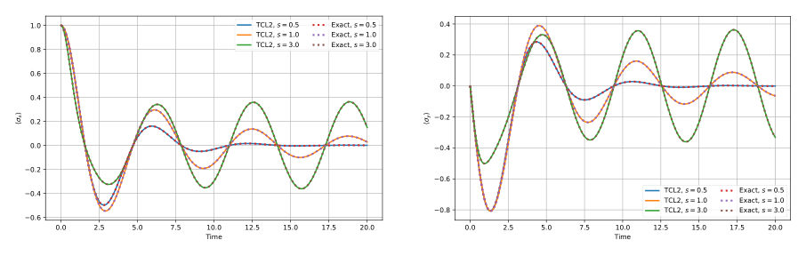
<figcaption class="paper-figure-caption"><b>Fig 1.</b> Figure 1: Benchmarking against the exactly solvable pure-dephasing model: Temporal profile of ⟨σx⟩t (left panel) and ⟨σy⟩t (right panel) for a purely dephasing environment. Solid curves show the results obtained from the numerical implementation after setting Jxx(ω) = Jxz(ω) = Jzx(ω) = 0, such that only Jzz(ω) contributes. The spectral-density (Jzz(ω)) parameters are ηz = 0.25, ωcz = 0.5, sz = 0.5 and 1.0. Dotted curves show the corresponding exact pure- dephasing solutions given in Eq. (50) for the same parameter values.</figcaption>
</figure>
<figure class="paper-figure-card">
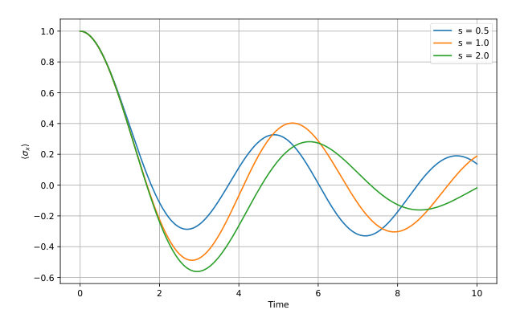
<figcaption class="paper-figure-caption"><b>Fig 2.</b> Figure 2: Benchmarking the pure dissipation sector. Temporal evolution of ⟨σx⟩t for a purely dissipative environment, obtained from the numerical implementation by setting Jxz(ω) = Jzx(ω) = Jzz(ω) = 0, such that only Jxx(ω) contributes. The spectral-density parameters are ηx = 0.05 and ωcx = 0.5, with representative values of sx in the sub-Ohmic (sx &lt; 1), Ohmic (sx = 1), and super-Ohmic (sx &gt; 1) regimes. The resulting profiles may be qualitatively compared with those reported in Ref. [19].</figcaption>
</figure>
<figure class="paper-figure-card">
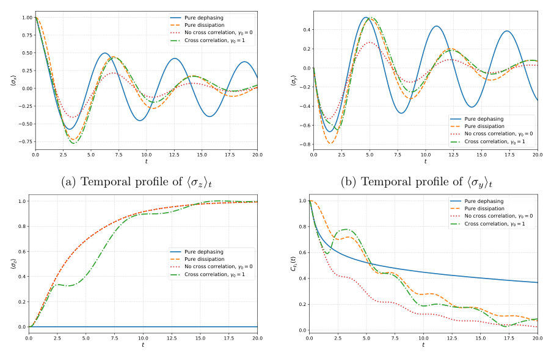
<figcaption class="paper-figure-caption"><b>Fig 3.</b> Figure 3: Temporal evolution of the Bloch-vector components of ρ(t) and coherence C(t) for the initial state ρ(0) = |+⟩⟨+|. The parameter sets are - for pure dephasing: (ηz = 0.05, sz = 1, ωcz = 5, ηx = 0); pure dissipation - (ηx = 0.05, sx = 1, ωcx = 5, ηz = 0); simultaneous dephasing and dissipation without cross correlations, (ηx = ηz = 0.05, sx = sz = 1, ωcx = ωcz = 5, γ0 = 0); and cross-correlated dephasing and dissipation, with the same parameters but γ0 = 1 and τ = 2. For all plots we take β = 40.</figcaption>
</figure>
<figure class="paper-figure-card">
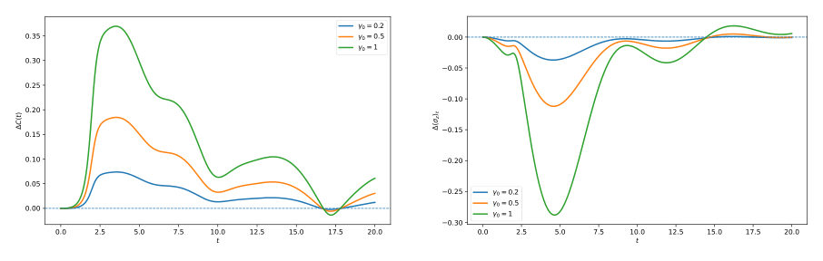
<figcaption class="paper-figure-caption"><b>Fig 4.</b> Figure 4: Temporal evolution of ∆C(t) (left panel) and ∆⟨σz⟩t (right panel) for representative cross-correlation strengths γ0 = 0.2, 0.5, and 1.0. The remaining cross-spectral parameters are fixed at ωc = 5, τ = 2 and ϕ = 0, with inverse temperature β = 40. The diagonal spectral- density parameters are ηx = ηz = 0.05, sx = sz = 1, and ωcx = ωcz = 5.</figcaption>
</figure>
<figure class="paper-figure-card">
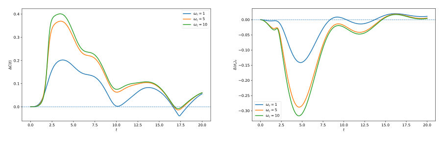
<figcaption class="paper-figure-caption"><b>Fig 5.</b> Figure 5: Temporal evolution of ∆C(t) (left panel) and ∆⟨σz⟩t (right panel) for representative values of the cross-spectral cutoff frequency, ωc = 1, 5, and 10. The remaining cross-spectral parameters are fixed at γ0 = 1, τ = 2 and ϕ = 0, with inverse temperature β = 40. The diagonal spectral-density parameters are ηx = ηz = 0.05, sx = sz = 1, and ωcx = ωcz = 5.</figcaption>
</figure>
</div>

<p><strong>Summary.</strong> This paper theoretically analyzes how correlated noise from a shared bosonic bath modifies qubit dynamics. By using the TCL2 framework, the authors show that cross-spectral correlations couple otherwise independent dephasing and relaxation channels. This coupling allows environmental noise to actively redistribute decoherence loss, creating temporary windows of enhanced coherence or suppressed energy decay.</p>
<p><strong>Why it may be interesting.</strong> This work directly addresses noise engineering in open quantum systems, showing how structured environmental coupling can be harnessed to temporarily protect or enhance coherence, which is critical for quantum memory and computation protocols.</p>
<details>
<summary>Detailed structure</summary>
<p><strong>Main problem.</strong> The study investigates how cross-spectral correlations between longitudinal (dephasing) and transverse (relaxation) noise affect the dynamics of a qubit.</p>
<p><strong>Main result.</strong> These correlations generate non-monotonic population relaxation and can induce a transient revival of coherence, allowing for temporal redistribution of decoherence loss.</p>
<p><strong>Method.</strong> The analysis employs the second-order time-convolutionless (TCL2) framework to derive closed, time-local equations for the qubit's Bloch vector components.</p>
<p><strong>Model / system.</strong> The model is a single qubit coupled to a shared bosonic bath via an interaction Hamiltonian. The environmental noise is characterized by a matrix-valued spectral density encoding cross-correlations between different noise channels.</p>
<p><strong>Key observables.</strong> Bloch vector components ($\langle\sigma_x
angle, \langle\sigma_y
angle, \langle\sigma_z
angle$), coherence revival magnitude ($\Delta C(t)$), and population relaxation modulation ($\Delta \langle\sigma_z
angle_t$).</p>
<p><strong>Important parameters / regimes.</strong> Cross-correlation strength ($\gamma_0$), spectral bandwidth ($\omega_c$), relative time delay ($  au$), phase offset ($\phi$), and bath temperature ($eta$).</p>
<p><strong>Assumptions / limitations.</strong> The analysis is restricted to the weak-coupling regime, and the dynamics are derived using the Born approximation within the TCL2 framework.</p>
<p><strong>Figures summary.</strong> Figures demonstrate how coherence enhancement and relaxation suppression vary by changing correlation strength, spectral bandwidth, relative time delay, phase offset, and bath temperature.</p>
<p><strong>Paper structure.</strong> The paper follows a logical progression: introducing the model, deriving the master equation using TCL2, specializing to the qubit dynamics, parameterizing correlations, validating numerically against known limits, analyzing the effects of cross-correlations, and concluding with discussions on control parameters.</p>
</details>
<details>
<summary>Abstract</summary>
<p>We investigate the reduced dynamics of a qubit subject to correlated longitudinal and transverse noise arising from its coupling to a shared bosonic bath. The environmental fluctuations are characterized by a positive-semidefinite matrix-valued spectral density, whose complex off-diagonal elements encode correlations between dephasing and relaxation channels in the frequency domain. Within the second-order time-convolutionless framework, we derive closed time-local equations for the Bloch-vector components of the reduced density matrix. The numerical implementation is validated against the exact pure-dephasing solution and the established behavior of the transverse-coupling spin-boson model. When both noise channels are present, the cross-spectral terms couple the otherwise distinct dephasing and relaxation sectors, producing dynamics that cannot be reproduced by adding independent noise contributions. In particular, the correlations generate non-monotonic population relaxation and a transient revival of coherence following its initial decay. The strength, bandwidth, delay, and phase of the cross spectrum provide control parameters for the magnitude and temporal structure of these effects. Our results demonstrate that correlated multi-axis noise can redistribute coherence loss and energy relaxation in time, thereby providing finite temporal windows of enhanced coherence or suppressed relaxation within the weak-coupling regime.</p>
</details>
<p><sub><a href="#top">↑ back to top</a></sub></p>

<p><a id="paper-2608.04882"></a></p>
<h3 id="variational-bounds-for-perceptron-learning-from-structured-data"><a href="http://arxiv.org/abs/2608.04882v1">Variational Bounds for Perceptron Learning from Structured Data</a></h3>
<p><strong>Authors:</strong> Francesco Camilli, Pierluigi Contucci, Federica Gerace, Emanuele Mingione<br>
<strong>Type:</strong> theory · <strong>Category:</strong> disordered systems and neural networks · <strong>PDF:</strong> <a href="https://arxiv.org/pdf/2608.04882v1">https://arxiv.org/pdf/2608.04882v1</a><br>
<strong>Analysis basis:</strong> full PDF text, analyzed in chunks
<strong>Topic relevance:</strong> <code>Keldysh / 2PI / non-Gaussian methods</code> <strong>3/5</strong> · <code>driven-dissipative phase transition</code> <strong>2/5</strong> · <code>entanglement &amp; information structure</code> <strong>2/5</strong> · <code>methods for driven-dissipative</code> <strong>2/5</strong> · <code>analog quantum simulation</code> <strong>1/5</strong> · <code>correlated / nonlocal dissipation</code> <strong>1/5</strong> · <code>correlated cavity matter</code> <strong>1/5</strong> · <code>non-equilibrium dynamics</code> <strong>1/5</strong> · <code>non-equilibrium universality</code> <strong>1/5</strong></p>
<div class="figure-strip-hint">↔ Scroll figures horizontally</div>
<div class="paper-figures-scroll">
<figure class="paper-figure-card">
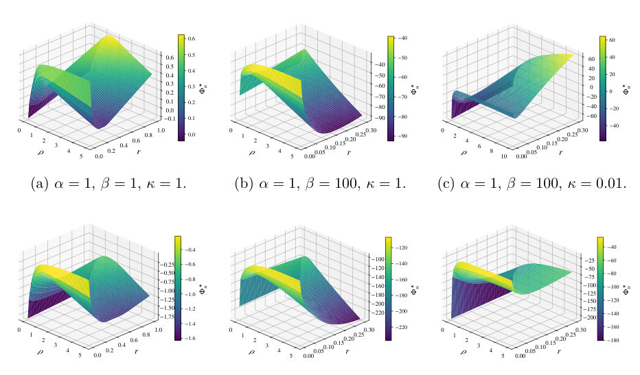
<figcaption class="paper-figure-caption"><b>Fig 1.</b> Figure 1: Numerical surfaces of the reduced variational potential Φ⋆ u(ρ, r) for different choices of the model parameters, with logistic utility uy(s) = −log (1 + e−ys), no ad- ditional separable regularization, ϕ(σi) = 0, and Gaussian centroid distribution θ ∼ N(0, IN). λ = 1 in all plots. The inner minimization over (δ, h) and the outer maximiza- tion over (q, m) are both performed using the L-BFGS-B method from scipy.optimize. In the degenerate case r = 0, where the constraint h2 ≤αr forces h = 0, the remaining scalar minimization over δ is performed using the bounded method from scipy.optimize. For both optimization routines, the tolerance is set to 10−9 and the maximum number of...</figcaption>
</figure>
<figure class="paper-figure-card">
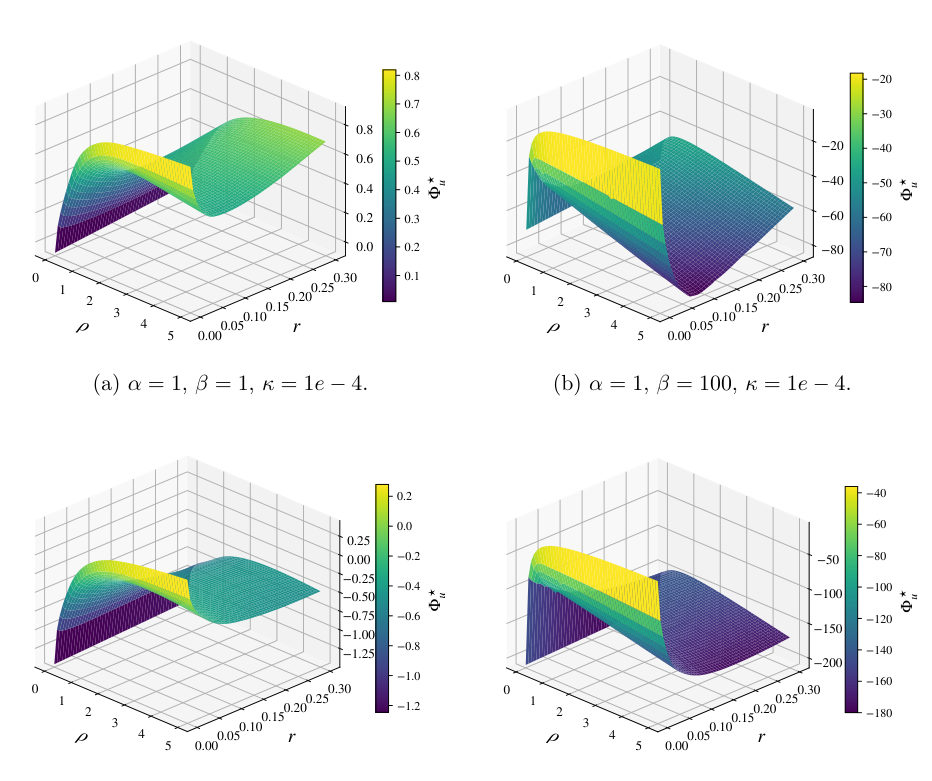
<figcaption class="paper-figure-caption"><b>Fig 2.</b> Figure 2: Numerical surfaces of the reduced variational potential Φ⋆ u(ρ, r) for different choices of the model parameters, with logistic utility uy(s) = −log (1 + e−ys), no addi- tional separable regularization, ϕ(σi) = log cosh σi, and Gaussian centroid distribution θ ∼N(0, IN). λ = 1 in all plots. The parameters of the optimization in δ, h, q and m are the same as in Figure 1.</figcaption>
</figure>
</div>

<p><strong>Summary.</strong> This work applies sophisticated variational principles from statistical physics to analyze the theoretical performance limits of a continuous-spin perceptron trained on structured data. By deriving matching upper and lower bounds for the quenched pressure, it provides a unified framework to calculate key learning metrics like generalization error and ground-state energy. This connects concepts from machine learning theory directly into the rigorous mathematical tools used in condensed matter physics.</p>
<p><strong>Why it may be interesting.</strong> Although focused on classical ML models, the use of advanced statistical mechanics tools (variational methods, quenched averages, replica-like structures) mirrors techniques used in analyzing quantum many-body systems near criticality or in disordered quantum Hamiltonians.</p>
<details>
<summary>Detailed structure</summary>
<p><strong>Main problem.</strong> The paper derives variational bounds for the quenched pressure associated with Perceptron learning from structured data in the thermodynamic limit.</p>
<p><strong>Main result.</strong> Lower and upper minimax variational bounds are established for the limiting quenched pressure, which match when optimization parameters commute, identifying a solution via a single variational principle.</p>
<p><strong>Method.</strong> The authors employ a variational approach using interpolation techniques (adapted from Guerra and Toninelli) to bound the free energy/quenched pressure.</p>
<p><strong>Model / system.</strong> The model is a continuous-spin perceptron trained on data generated by a Gaussian mixture, described by a random Hamiltonian $H_N(\sigma)$ acting on spins $\sigma \in \mathbb{R}^N$.</p>
<p><strong>Key observables.</strong> Quenched pressure (limit of the log partition function), training loss ($\epsilon_t$), generalization error ($\epsilon_g$), and ground-state energy.</p>
<p><strong>Important parameters / regimes.</strong> Mixing strength ($\lambda$), centroid ($  heta$), regularization parameter ($\kappa$), and system size ($N, M$).</p>
<p><strong>Assumptions / limitations.</strong> The method requires specific hypotheses on the utility functions (concavity) and relies on log-concavity estimates; matching of outer optimizations is a key point.</p>
<p><strong>Paper structure.</strong> The paper builds from defining the physical model and Hamiltonian, to introducing variational bounds via interpolation techniques, deriving stationarity conditions from a single potential, and finally applying this framework to compute multiple thermodynamic quantities like loss and error.</p>
</details>
<details>
<summary>Abstract</summary>
<p>We introduce a variational approach to a finite-temperature continuous-spin perceptron trained on a Gaussian mixture. The model allows for a broad class of concave utilities and log-concave separable prior measures on the spins. By combining the interpolation method with log-concavity and concentration estimates, we derive lower and upper minimax variational bounds for the limiting quenched pressure. Remarkably, the two bounds differ only in the order of optimization of two variational parameters, while all remaining extrema are controlled by the concave--convex structure of the variational potential. Whenever the two optimizations commute, the two bounds match and identify the solution of the model. The same potential yields the fixed-point equations as stationarity conditions and provides a unified route to the computation of the ground-state energy, training loss, and generalization error.</p>
</details>
<p><sub><a href="#top">↑ back to top</a></sub></p>

<p><a id="paper-2608.04816"></a></p>
<h3 id="ghost-risb-for-correlated-electron-phonon-systems-application-to-the-hubbard-holstein-model"><a href="http://arxiv.org/abs/2608.04816v1">Ghost-RISB for Correlated Electron-Phonon Systems: Application to the Hubbard-Holstein Model</a></h3>
<p><strong>Authors:</strong> Samuele Giuli, Ricardo J. Campos-Lopes, Emin Moghadas, Massimo Capone<br>
<strong>Type:</strong> theory · <strong>Category:</strong> strongly correlated electrons · <strong>PDF:</strong> <a href="https://arxiv.org/pdf/2608.04816v1">https://arxiv.org/pdf/2608.04816v1</a><br>
<strong>Analysis basis:</strong> full PDF text, analyzed in chunks
<strong>Topic relevance:</strong> <code>Keldysh / 2PI / non-Gaussian methods</code> <strong>3/5</strong> · <code>methods for driven-dissipative</code> <strong>3/5</strong> · <code>driven-dissipative phase transition</code> <strong>2/5</strong> · <code>Kondo &amp; dissipative impurity</code> <strong>1/5</strong> · <code>analog quantum simulation</code> <strong>1/5</strong> · <code>correlated / nonlocal dissipation</code> <strong>1/5</strong> · <code>correlated cavity matter</code> <strong>1/5</strong> · <code>non-equilibrium dynamics</code> <strong>1/5</strong></p>
<div class="figure-strip-hint">↔ Scroll figures horizontally</div>
<div class="paper-figures-scroll">
<figure class="paper-figure-card">
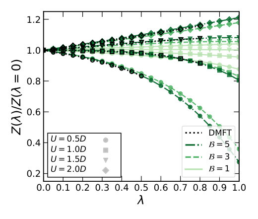
<figcaption class="paper-figure-caption"><b>Fig 1.</b> Figure 1: Effect of electron-phonon interaction on the quasi- particle weight Z measured by the ratio Z(λ)/Z(λ = 0) for ω0 = 0.2 and U = 0.5D (circles), U = 1.0D (squares), U = 1.5D (triangles) and U = 2.0D (diamond). The figure compares DMFT (black, dotted line) extracted from Ref. [29] with ghost-RISB using B = 5 (dark green, dash-dot line), B = 3 (green, dashed line) and B = 1 (light green, contin- uous line).</figcaption>
</figure>
<figure class="paper-figure-card">
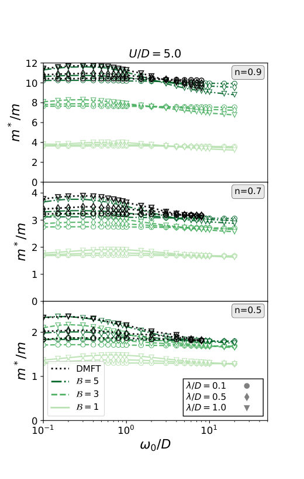
<figcaption class="paper-figure-caption"><b>Fig 2.</b> Figure 2: Mass renormalisation as a function of the phonon frequency for n = 0.9 (top panel), n = 0.7 (central panel) and n = 0.5 (bottom panel) at fixed U = 5D. In each panel, we plot B = 1 (light green, continuous line), B = 3 (green, dashed line) and B = 5 (dark green, dash-dot line), together with DMFT (dotted gray lines). The markers indicate λ = 1.0D (triangle), λ = 0.5D (diamond) and λ = 0.1D (circle). The agreement increases with doping and with the number of ghosts. B = 5 is in perfect agreement with DMFT data from Ref.[30].</figcaption>
</figure>
<figure class="paper-figure-card">
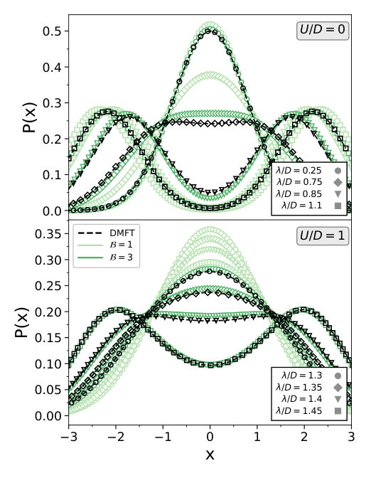
<figcaption class="paper-figure-caption"><b>Fig 3.</b> Figure 3: Phonon probability distribution functions for dif- ferent values of λ. We compare the case of the half-filled Hol- stein model (upper panel) and the Hubbard-Holstein model at U/D = 1 (lower panel), both with a characteristic frequency of ω0/D = 0.2. The calculations are for B = 1 and B = 3 and are compared with DMFT data extracted from [69, 72].</figcaption>
</figure>
<figure class="paper-figure-card">
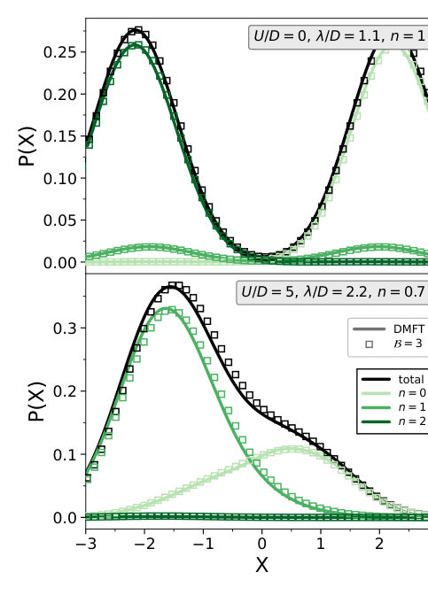
<figcaption class="paper-figure-caption"><b>Fig 4.</b> Figure 4: Total and charge-resolved phonon probability dis- tribution functions projected to the empty, single, and double- occupied charge sectors. We compare the half-filled Holstein model (upper panel) at λ/D = 1.1 and the doped Hubbard- Holstein model at U/D = 5, λ/D = 2.2 (lower panel) at a filling of n = 0.7, both with a characteristic frequency of ω0/D = 0.2. The calculations are done for B = 3 and com- pared with DMFT data at the same parameter values.</figcaption>
</figure>
<figure class="paper-figure-card">
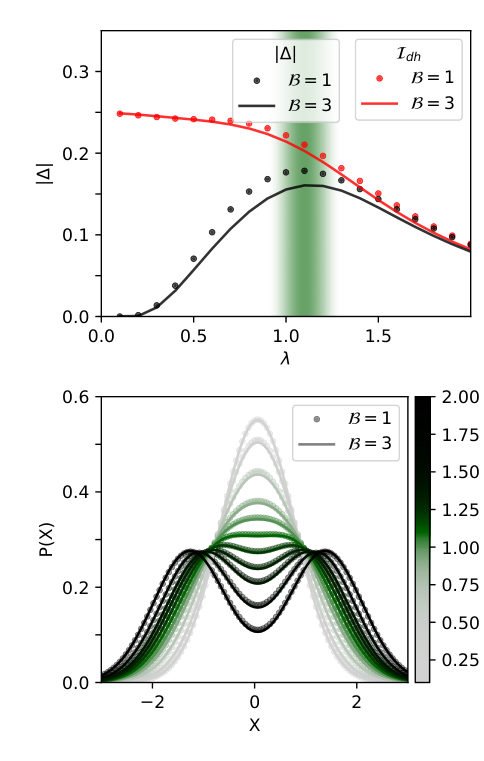
<figcaption class="paper-figure-caption"><b>Fig 5.</b> Figure 5: Holstein model (U/D = 0 and ω0/D = 1.0) plot of (a) superconducting order parameter (black) and double- holon overlap Idh (red) for B = 1 (dots) and B = 3 (line) and as a function of the effective attraction λ. In green the area at which we identify the polaronic crossover. (b) Phononic dis- tribution function showed for values of λ/D between 0.0 (light gray) and 2.0 (black) passing through the polaronic crossover (green) around λ = 1.1 using B = 1 (dots) and B = 3 (line).</figcaption>
</figure>
</div>

<p><strong>Summary.</strong> This paper introduces an advanced theoretical tool, the ghost-RISB method, to tackle the challenging physics of correlated electron-phonon interactions in models like Hubbard-Holstein. It successfully reproduces key results from computationally intensive DMFT while offering superior efficiency for mapping out complex phase diagrams, particularly concerning superconductivity suppression.</p>
<p><strong>Why it may be interesting.</strong> The method provides a computationally cheaper alternative to DMFT for strongly coupled electron-phonon systems, allowing rapid phase diagram exploration that is critical for understanding materials like high-Tc superconductors or polaronic conductors.</p>
<details>
<summary>Detailed structure</summary>
<p><strong>Main problem.</strong> The primary goal is developing a theoretical framework to accurately treat the complex interplay between electron-electron correlation (Hubbard repulsion) and local electron-phonon coupling in quantum materials.</p>
<p><strong>Main result.</strong> The generalized ghost-RISB method achieves quantitative agreement with DMFT for key observables like quasiparticle weights, while being significantly more computationally efficient. It also predicts a suppression of the superconducting order parameter in the bipolaronic regime.</p>
<p><strong>Method.</strong> The authors generalize the ghost-rotationally-invariant slave-boson (ghost-RISB) method by incorporating local phonon modes into the variational framework. This involves mapping the problem onto an enlarged Fock space and solving saddle-point equations derived from a Lagrangian formulation.</p>
<p><strong>Model / system.</strong> The study focuses on the Hubbard-Holstein model, which describes fermions coupled to local optical phonon modes via terms for hopping ($t$), on-site repulsion ($U$), phonon energy ($\omega_0$), and electron-phonon coupling ($g$).</p>
<p><strong>Key observables.</strong> Electron quasiparticle weights (Z), superconducting order parameter, and charge-resolved phonon distributions ($P_2(X)$ and $P_0(X)$).</p>
<p><strong>Important parameters / regimes.</strong> Coupling strengths are characterized by dimensionless ratios like $\lambda = 2g^2/\omega_0$. The analysis covers regimes ranging from weak to strong coupling.</p>
<p><strong>Assumptions / limitations.</strong> The method relies on mean-field decoupling for both bosonic and fermionic fields, and the final results are obtained by imposing static saddle point conditions on the derived Lagrangian.</p>
<p><strong>Figures summary.</strong> Figure 1 compares DMFT results with ghost-RISB calculations for the quasi-particle weight Z under varying electron-electron coupling strengths (U).</p>
<p><strong>Paper structure.</strong> The paper introduces the Hamiltonian, develops the generalized ghost-RISB formalism by mapping to an enlarged space and deriving a Lagrangian ($\mathcal{L}_{	ext{gRISB}}$), solves the resulting saddle point equations for matrix fields, benchmarks against DMFT, and finally applies the framework to analyze superconducting pairing in the bipolaronic regime.</p>
</details>
<details>
<summary>Abstract</summary>
<p>We develop a generalization of the ghost-rotationally-invariant slave-boson (ghost-RISB) method that incorporates local phonon modes coupled to arbitrary on-site electronic degrees of freedom, enabling a nonperturbative treatment of electron-electron and electron-phonon interactions within an efficient variational framework. The method extends the ghost-orbital construction to capture dynamical self-energy effects and phonon-induced renormalizations beyond static slave-boson approaches. Benchmarking against dynamical mean-field theory (DMFT) results for the Hubbard-Holstein model, we find excellent quantitative agreement for electron quasiparticle weights and phonon properties across a wide range of coupling strengths, and it captures accurately the competition between electron-electron and electron-phonon interactions. We show that the inclusion of the ghost orbitals is crucial to accurately describe the regime of low-frequency, strongly dynamical, phonons. The extended ghost-RISB achieves this accuracy at a fraction of the computational cost of DMFT, due to its self-consistency rooted in static observables instead of dynamical ones, enabling rapid exploration of correlated electron-phonon phase diagrams. We exploit this advantage to characterize the most demanding regime of strong coupling and adiabatic phonons. Our analysis shows a suppression of the superconducting order parameter, which is interpreted as a Franck-Condon-like reduction of the overlap between the phonon wavefunctions associated with empty and doubly-occupied sites in the bipolaronic regime.</p>
</details>
<p><sub><a href="#top">↑ back to top</a></sub></p>

<p><a id="paper-2608.04685"></a></p>
<h3 id="quantum-switch-induced-non-markovianity-is-not-entirely-quantum"><a href="http://arxiv.org/abs/2608.04685v1">Quantum SWITCH-induced non-Markovianity is not entirely quantum</a></h3>
<p><strong>Authors:</strong> Rajeev Gangwar, Ananda G. Maity<br>
<strong>Type:</strong> theory · <strong>Category:</strong> quantum information and computing · <strong>PDF:</strong> <a href="https://arxiv.org/pdf/2608.04685v1">https://arxiv.org/pdf/2608.04685v1</a><br>
<strong>Analysis basis:</strong> full PDF text, analyzed in chunks
<strong>Topic relevance:</strong> <code>entanglement &amp; information structure</code> <strong>3/5</strong> · <code>methods for driven-dissipative</code> <strong>3/5</strong> · <code>correlated / nonlocal dissipation</code> <strong>2/5</strong> · <code>driven-dissipative phase transition</code> <strong>2/5</strong> · <code>Keldysh / 2PI / non-Gaussian methods</code> <strong>1/5</strong> · <code>non-equilibrium dynamics</code> <strong>1/5</strong> · <code>non-equilibrium universality</code> <strong>1/5</strong></p>
<div class="figure-strip-hint">↔ Scroll figures horizontally</div>
<div class="paper-figures-scroll">
<figure class="paper-figure-card">
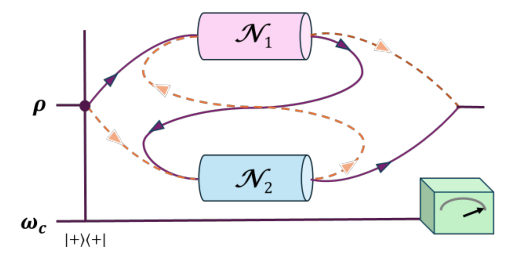
<figcaption class="paper-figure-caption"><b>Fig 1.</b> FIG. 1: Schematic illustration of the quantum SWITCH. The control qubit is initialized in the state ωc = |+⟩⟨+|, thereby coherently superposing the two possible channel orders: N1 followed by N2, and N2 followed by N1. The control qubit is subsequently measured in the superposition basis.</figcaption>
</figure>
<figure class="paper-figure-card">
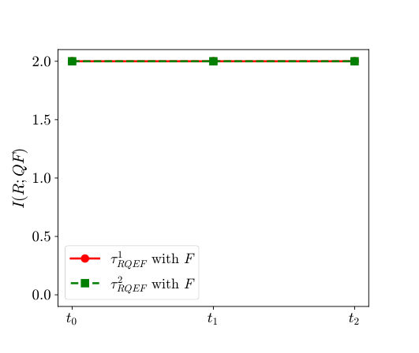
<figcaption class="paper-figure-caption"><b>Fig 2.</b> FIG. 3: Mutual information I(R; QF), where F is the extended space, shows monotonic behavior at all time steps, confirming the absence of genuine quantum non-Markovianity for both processes.</figcaption>
</figure>
<figure class="paper-figure-card">
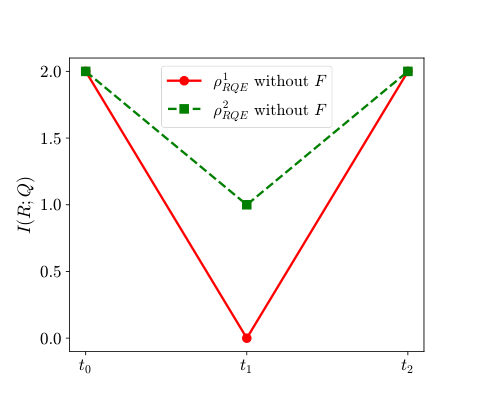
<figcaption class="paper-figure-caption"><b>Fig 3.</b> FIG. 2: Mutual information I(R; Q) between the reference system (R) and the quantum system (Q) at discrete time steps (t0, t1, t2), exhibiting non-Markovian dynamics, where the en- vironment is initialized in γ(1) E maximally mixed state and γ(2) E classically correlated state.</figcaption>
</figure>
<figure class="paper-figure-card">
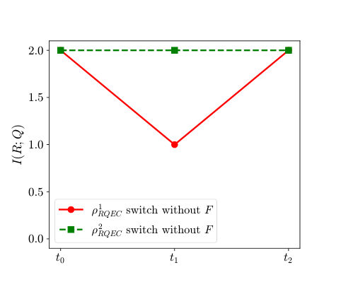
<figcaption class="paper-figure-caption"><b>Fig 4.</b> FIG. 4: Mutual information I(R; Q) under the quantum SWITCH, where initial state ρ1 0 exhibits non-monotonic (non- Markovian) behavior while initial state ρ2 0 remains constant across all time steps.</figcaption>
</figure>
<figure class="paper-figure-card">
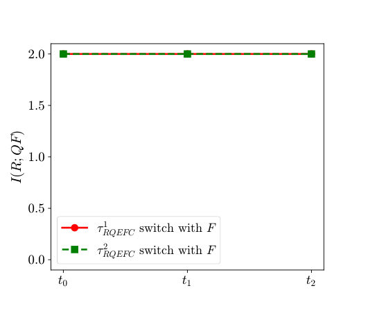
<figcaption class="paper-figure-caption"><b>Fig 5.</b> FIG. 5: Mutual information I(R; QF) at discrete time steps (t0, t1, t2) under the quantum SWITCH, remains mono- tonic, confirming the absence of genuine quantum non- Markovianity.</figcaption>
</figure>
</div>

<p><strong>Summary.</strong> This paper investigates the memory effects generated by the quantum SWITCH, a mechanism enabling indefinite causal order. By employing advanced diagnostics comparing standard and extended mutual information, the authors demonstrate that any observed non-Markovianity is not genuinely quantum. This forces a critical re-examination of which physical resources truly provide quantum advantages in such protocols.</p>
<p><strong>Why it may be interesting.</strong> This work is highly relevant for theoretical physicists working on open quantum systems because it provides a rigorous, advanced diagnostic tool (the $I(R; QF)$ test) to filter out spurious non-Markovian signatures that might otherwise lead to overestimation of quantum advantages in complex protocols like indefinite causal order.</p>
<details>
<summary>Detailed structure</summary>
<p><strong>Main problem.</strong> The study aims to determine if memory effects (non-Markovianity) generated by the quantum SWITCH are genuinely quantum or merely artifacts arising from classical correlations.</p>
<p><strong>Main result.</strong> The research concludes that the observed memory effects in the quantum SWITCH dynamics are not genuinely quantum non-Markovian, suggesting a re-evaluation of the physical resources underpinning indefinite causal order advantages.</p>
<p><strong>Method.</strong> The authors analyze two scenarios (discrete and continuous time) using advanced diagnostics like CP-divisibility and comparing standard mutual information ($I(R; Q)$) against an extended environment mutual information ($I(R; QF)$).</p>
<p><strong>Model / system.</strong> The core model is the quantum SWITCH, which implements indefinite causal order by coherently superposing different orders of quantum channels acting on a system coupled to a control qubit.</p>
<p><strong>Key observables.</strong> Non-Markovian information backflow, Quantum Mutual Information $I(R; Q)$, and the extended mutual information $I(R; QF)$.</p>
<p><strong>Important parameters / regimes.</strong> The analysis distinguishes between genuine quantum non-Markovianity (requiring specific monotonicity in $I(R; QF)$) and classical sources of memory.</p>
<p><strong>Assumptions / limitations.</strong> The primary diagnostic tool relies on the assumption that true quantum non-Markovianity must manifest as a monotonic decrease when the environment is extended with an inert system ($F$).</p>
<p><strong>Figures summary.</strong> Figures illustrate the comparison between $I(R; Q)$ (showing non-monotonic revival) and $I(R; QF)$ (showing monotonic decay) for both discrete and continuous time settings, confirming the classical origin of apparent memory.</p>
<p><strong>Paper structure.</strong> The paper analyzes the quantum SWITCH in both discrete-time evolution and continuous-time dynamical maps. The core logic involves applying various non-Markovianity measures and ultimately using the extended environment diagnostic ($F$) to distinguish genuine quantum effects from classical ones.</p>
</details>
<details>
<summary>Abstract</summary>
<p>Indefinite causal order extends quantum information processing beyond fixed causal structures, with the quantum SWITCH serving as its canonical realization. By coherently superposing different orders of quantum channels, the quantum SWITCH has been shown to provide operational advantages in communication, computation, metrology, and related tasks. Despite these advances, the physical resources responsible for these advantages remains unclear. Recent studies have further revealed that the quantum SWITCH can generate memory effects, manifested as non-Markovian information backflow. In this work, we examine the origin of such memory and determine whether they reflect genuine (quantum) non-Markovianity or instead arises from classical origin. To this end, we analyze two representative scenarios: one based on discrete-time evolution and another formulated through dynamical maps in open quantum systems. We show that the memory effects generated by the quantum SWITCH are not genuinely quantum non-Markovian, thereby prompting a re-examination of the source of quantum advantage in indefinite causal order frameworks.</p>
</details>
<p><sub><a href="#top">↑ back to top</a></sub></p>

<p><a id="paper-2608.04354"></a></p>
<h3 id="the-born-representation-theorem-and-the-unistochastic-theorem"><a href="http://arxiv.org/abs/2608.04354v1">The Born Representation Theorem and the Unistochastic Theorem</a></h3>
<p><strong>Authors:</strong> Jacob A. Barandes<br>
<strong>Type:</strong> theory · <strong>Category:</strong> other · <strong>PDF:</strong> <a href="https://arxiv.org/pdf/2608.04354v1">https://arxiv.org/pdf/2608.04354v1</a><br>
<strong>Analysis basis:</strong> full PDF text, analyzed in chunks
<strong>Topic relevance:</strong> <code>quantum measurements</code> <strong>3/5</strong> · <code>non-equilibrium dynamics</code> <strong>2/5</strong> · <code>Keldysh / 2PI / non-Gaussian methods</code> <strong>1/5</strong> · <code>analog quantum simulation</code> <strong>1/5</strong> · <code>correlated / nonlocal dissipation</code> <strong>1/5</strong> · <code>driven-dissipative phase transition</code> <strong>1/5</strong> · <code>entanglement &amp; information structure</code> <strong>1/5</strong> · <code>measurement-induced transitions</code> <strong>1/5</strong> · <code>methods for driven-dissipative</code> <strong>1/5</strong> · <code>non-equilibrium universality</code> <strong>1/5</strong></p>
<div class="figure-strip-hint">↔ Scroll figures horizontally</div>
<div class="paper-figures-scroll">
<figure class="paper-figure-card">
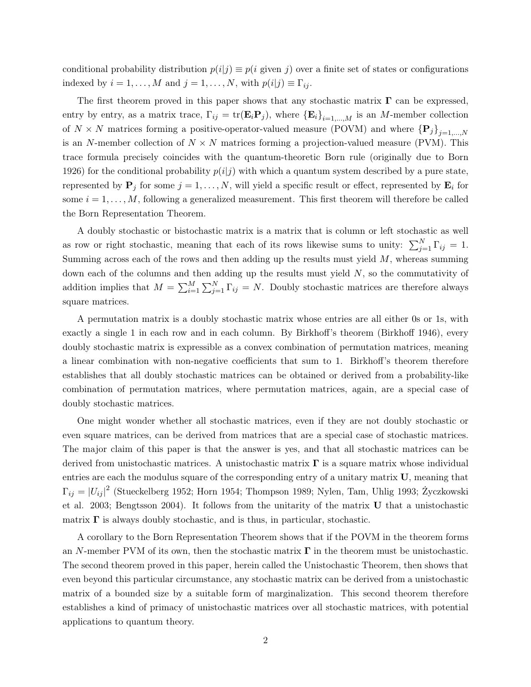
<figcaption class="paper-figure-caption"><b>Fig 1.</b> Low-resolution page preview, page 2</figcaption>
</figure>
<figure class="paper-figure-card">
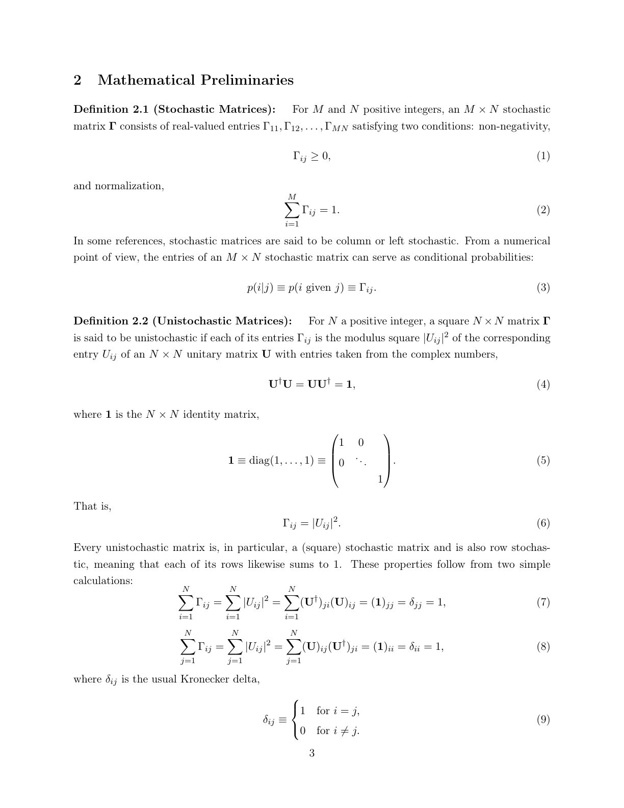
<figcaption class="paper-figure-caption"><b>Fig 2.</b> Low-resolution page preview, page 3</figcaption>
</figure>
<figure class="paper-figure-card">
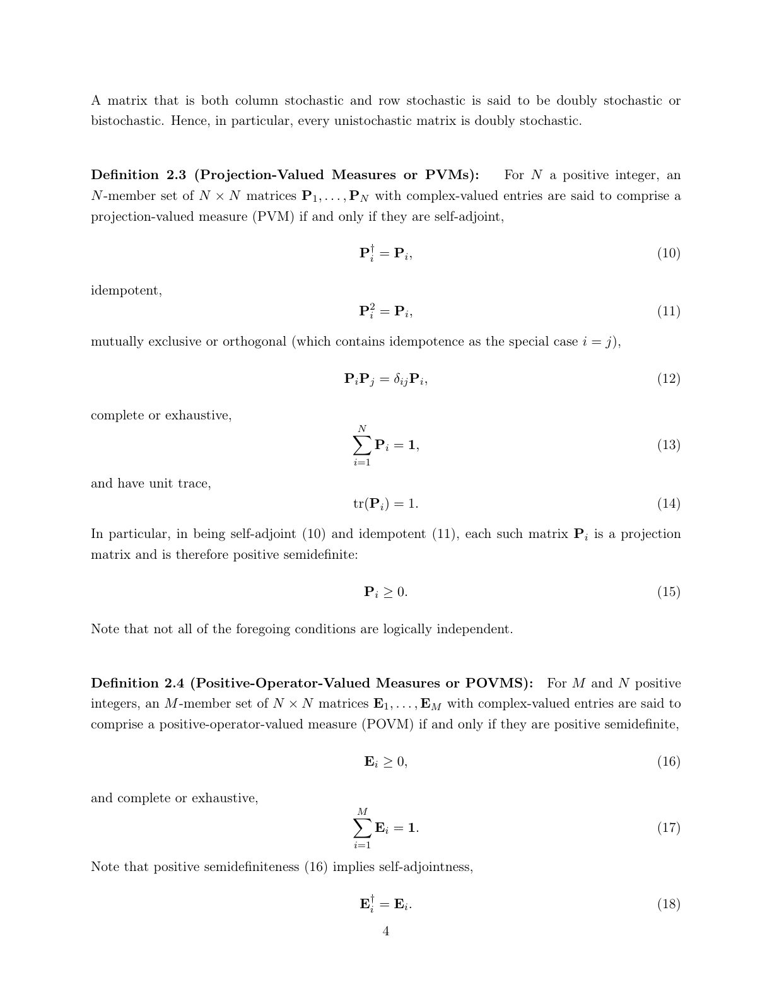
<figcaption class="paper-figure-caption"><b>Fig 3.</b> Low-resolution page preview, page 4</figcaption>
</figure>
<figure class="paper-figure-card">
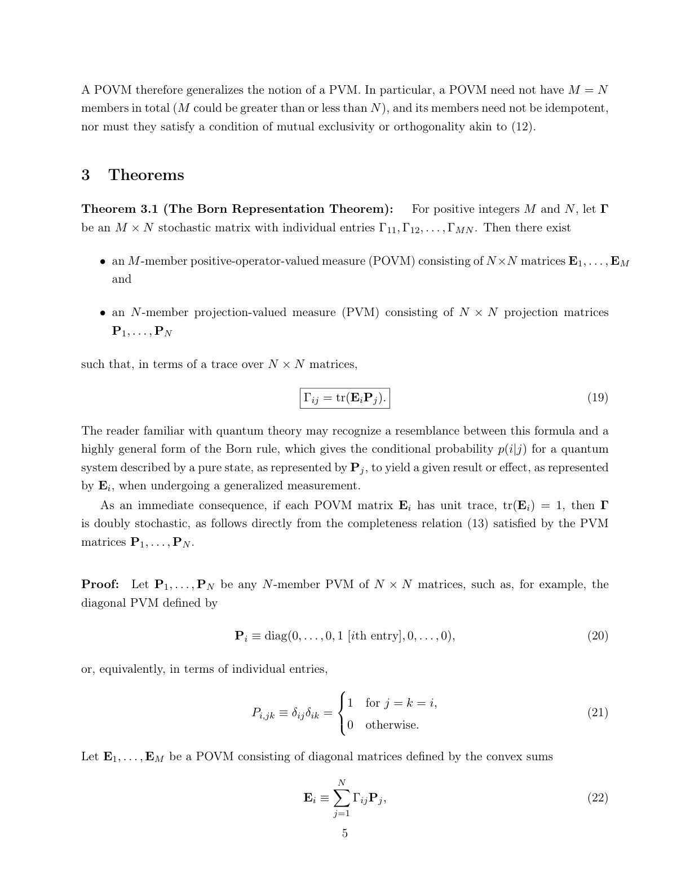
<figcaption class="paper-figure-caption"><b>Fig 4.</b> Low-resolution page preview, page 5</figcaption>
</figure>
<figure class="paper-figure-card">
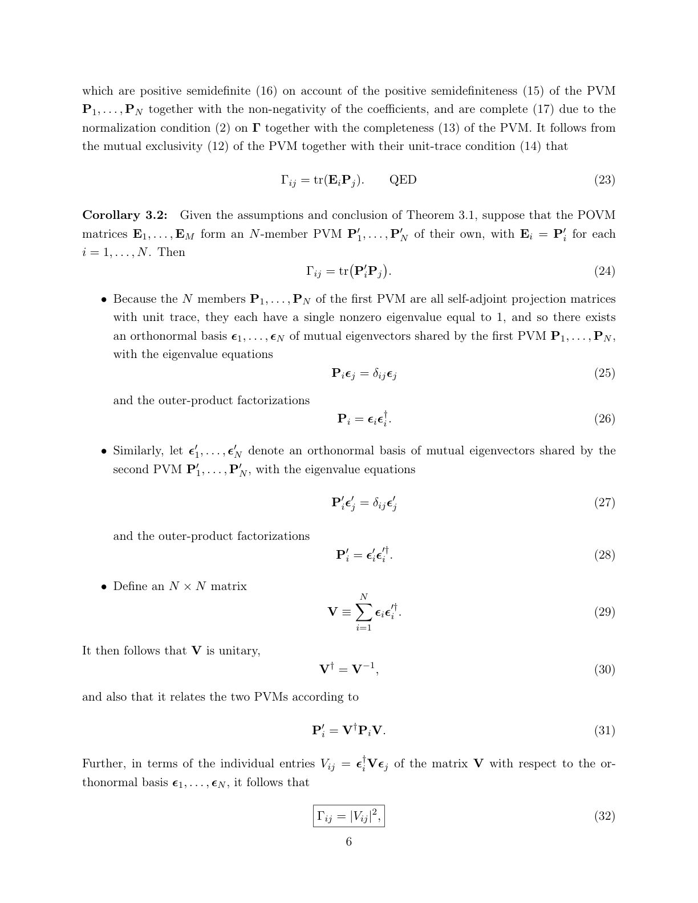
<figcaption class="paper-figure-caption"><b>Fig 5.</b> Low-resolution page preview, page 6</figcaption>
</figure>
</div>

<p><strong>Summary.</strong> This paper develops two theorems connecting stochastic matrices to quantum probability theory. It shows that any entry in a stochastic matrix can be written as a trace involving generalized quantum measurement operators (POVMs and PVMs). Crucially, it establishes that these processes are fundamentally linked to unistochastic matrices, suggesting that unitary evolution dictates the structure of all discrete-time probabilistic systems.</p>
<p><strong>Why it may be interesting.</strong> This work provides a rigorous mathematical bridge between classical Markovian dynamics and quantum unitary evolution by showing how general probabilistic processes are constrained by structures related to unitaries (unistochastic matrices).</p>
<details>
<summary>Detailed structure</summary>
<p><strong>Main problem.</strong> To establish deep mathematical connections between stochastic matrices, which model classical probabilistic processes (Markov chains), and the probability rules derived from quantum mechanics.</p>
<p><strong>Main result.</strong> The paper proves that any entry of a stochastic matrix can be expressed as a trace involving POVMs and PVMs (Born Representation Theorem), and further shows that these entries are fundamentally constrained by unistochastic matrices, suggesting a primacy of unitary evolution structures.</p>
<p><strong>Method.</strong> Constructive proofs utilizing properties of Positive-Operator-Valued Measures (POVMs) and Projection-Valued Measures (PVMs) within the framework of trace formulas.</p>
<p><strong>Model / system.</strong> The model centers on stochastic matrices $\Gamma$ describing conditional probabilities $p(i|j)$ in discrete-time Markov chains. These are related to quantum systems via PVMs $\{P_j\}$ and POVMs $\{E_i\}$, which generalize the standard Born rule.</p>
<p><strong>Key observables.</strong> The entries of the stochastic matrix $\Gamma_{ij}$, representing conditional probabilities, and their representation as traces involving quantum measures.</p>
<p><strong>Important parameters / regimes.</strong> The dimensions $M 	imes N$ of the stochastic matrix; the structure of the underlying POVMs and PVMs.</p>
<p><strong>Assumptions / limitations.</strong> The primary assumption is that classical probabilistic processes can be mapped onto structures derived from quantum measurements (POVM/PVM formalism).</p>
<p><strong>Paper structure.</strong> The paper introduces the Born Representation Theorem, showing $\Gamma_{ij} = 	ext{tr}(E_i P_j)$. It then proves a corollary relating this to unistochastic matrices. Finally, it presents the Unistochastic Theorem, demonstrating that any stochastic matrix can be derived from marginalizing a larger unistochastic structure.</p>
</details>
<details>
<summary>Abstract</summary>
<p>This paper presents self-contained, constructive proofs of two new theorems about stochastic matrices, with direct relevance to quantum theory. The first theorem, herein called the Born Representation Theorem, shows that each entry of any stochastic matrix can be expressed as the trace of a pairwise product of matrices, where the first factor in the pairwise product belongs to a positive-operator-valued measure (POVM) and the second factor belongs to a projection-valued measure (PVM). As its name suggests, this theorem entails that the entries of any stochastic matrix can be expressed in terms of a generalized version of the quantum-theoretic Born rule. It follows as a corollary that if the POVM in this first theorem is a PVM, then the stochastic matrix is unistochastic, meaning that its entries are each the modulus square of the corresponding entry of a unitary matrix of the same size. The second theorem proved in this paper, called the Unistochastic Theorem, then shows that by dilating the underlying vector space by a bounded number of additional dimensions if necessary, each entry of any stochastic matrix can be expressed in terms of the trace of a pairwise product for which both factors belong to PVMs, and can thus be derived via marginalization from a larger unistochastic matrix. This second theorem therefore establishes a kind of primacy of unistochastic matrices over stochastic matrices, and hints at a close connection with unitary time evolution in quantum theory. The paper concludes with a brief discussion of potential applications to discrete-time deterministic processes and Markov chains.</p>
</details>
<p><sub><a href="#top">↑ back to top</a></sub></p>

<p><a id="paper-2608.04494"></a></p>
<h3 id="dynamically-suppressing-cavity-dephasing-induced-by-frequency-fluctuations-of-a-coupled-nonlinear-mode"><a href="http://arxiv.org/abs/2608.04494v1">Dynamically suppressing cavity dephasing induced by frequency fluctuations of a coupled nonlinear mode</a></h3>
<p><strong>Authors:</strong> Yunwei Lu, Xinyuan You, Ziwen Huang, Sébastien Léger, Jens Koch, Yao Lu<br>
<strong>Type:</strong> theory · <strong>Category:</strong> other · <strong>PDF:</strong> <a href="https://arxiv.org/pdf/2608.04494v1">https://arxiv.org/pdf/2608.04494v1</a><br>
<strong>Analysis basis:</strong> full PDF text, analyzed in chunks
<strong>Topic relevance:</strong> <code>methods for driven-dissipative</code> <strong>3/5</strong> · <code>QC/QI experiment</code> <strong>2/5</strong> · <code>non-equilibrium dynamics</code> <strong>2/5</strong> · <code>Keldysh / 2PI / non-Gaussian methods</code> <strong>1/5</strong> · <code>correlated / nonlocal dissipation</code> <strong>1/5</strong> · <code>correlated cavity matter</code> <strong>1/5</strong> · <code>driven-dissipative phase transition</code> <strong>1/5</strong> · <code>quantum optics experiment</code> <strong>1/5</strong></p>
<div class="figure-strip-hint">↔ Scroll figures horizontally</div>
<div class="paper-figures-scroll">
<figure class="paper-figure-card">
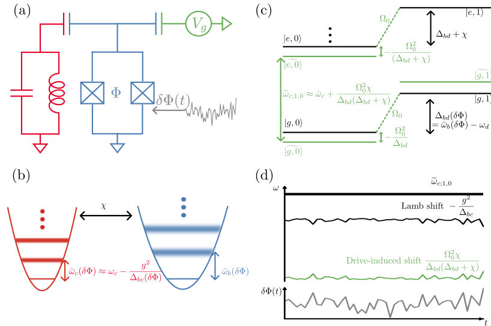
<figcaption class="paper-figure-caption"><b>Fig 1.</b> Figure 1. Illustration of suppressing cavity dephasing by Stark-assisted flux-noise evasion (SAFE). (a) Circuit diagram of a flux-tunable transmon (FTT) dispersively coupled to a superconducting cavity. The FTT is driven by a coherent voltage source Vg. Flux noise δΦ(t) modulates the FTT frequency and constitutes the dominant noise source. (b) Fluctuations of the cavity frequency induced by the Lamb shift. The bare modes have frequencies ωc and ωb(δΦ), with detuning ∆bc(δΦ) = ωb(δΦ) −ωc. The coupling g hybridizes the modes and yields dressed frequencies ¯ωb/c(δΦ), dispersive shift χ. As a result, fluctuations in the FTT frequency δωb(t) caused by flux noise δΦ(t) lead to cavity-frequency...</figcaption>
</figure>
<figure class="paper-figure-card">
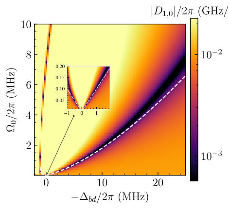
<figcaption class="paper-figure-caption"><b>Fig 2.</b> Figure 2. Dynamical sweet spots generated by SAFE. Two- dimensional map of D1,0 as a function of drive amplitude Ω0 and detuning ∆bd. Dashed curves denote the analytical sweet- spot conditions from Eqs. (22) and (28) for the main panel and the inset, respectively. See App. E for the representative system parameters in the dispersive regime.</figcaption>
</figure>
<figure class="paper-figure-card">
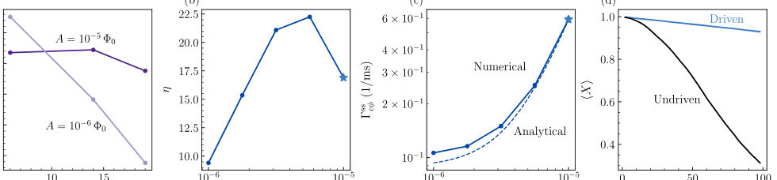
<figcaption class="paper-figure-caption"><b>Fig 3.</b> Figure 3. Numerical evaluation of cavity pure-dephasing suppression and time-domain simulation of SAFE. (a) Pure-dephasing suppression factor η as a function of the drive detuning ∆bd for the 1/f flux-noise amplitudes A = 10−6Φ0 and 10−5Φ0. SAFE suppresses the cavity pure-dephasing rate over the parameter range considered here. The suppression decreases more rapidly with |∆bd| at the smaller noise amplitude, whereas it remains nearly constant at moderate detunings for the larger noise amplitude. (b) η as a function of the 1/f flux-noise amplitude A at ∆bd/2π = −19 MHz. The maximum suppression occurs near A ≈6 × 10−6Φ0. (c) Cavity pure-dephasing rates as functions of A at ∆bd/2π = −19 MHz....</figcaption>
</figure>
<figure class="paper-figure-card">
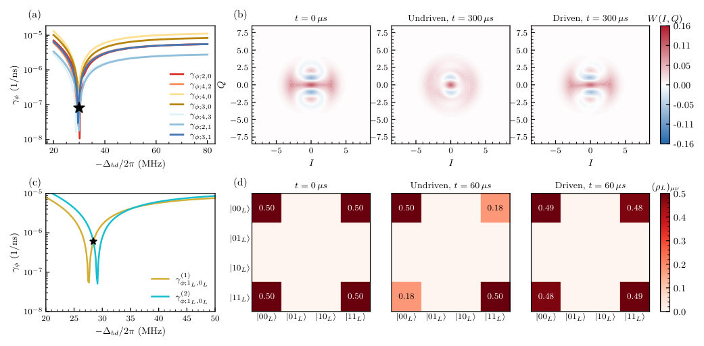
<figcaption class="paper-figure-caption"><b>Fig 4.</b> Figure 4. Improvement of the coherence of bosonic encodings using SAFE (the drive amplitude is Ω0/2π = 10 MHz throughout). Binomial code—(a) Dephasing rates (γϕ;m,n) induced by FTT frequency fluctuations as a function of ∆bd. The star marks ∆bd/2π ≈−30 MHz, where all relevant γϕ;m,n are suppressed by factors of at least 13. (b) Wigner function of |+L⟩at t = 300 µs, plotted in the dimensionless phase-space coordinates I and Q. The driven case retains the interference features that are lost without the drive. The decoherence-induced infidelity is reduced from 0.3 without the drive to 0.043 with the drive. Dual-rail encoding—(c) Dephasing rate of each dual-rail qubit as a function of ∆bd. Both...</figcaption>
</figure>
<figure class="paper-figure-card">
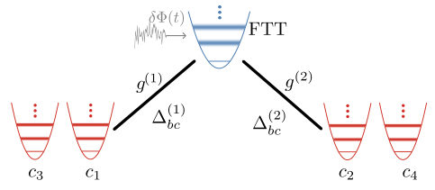
<figcaption class="paper-figure-caption"><b>Fig 5.</b> Figure 5. Schematic of the system of two dual-rail qubits considered in this work. The first logical qubit is encoded in cavities c1 and c3, and the second logical qubit is encoded in cavities c2 and c4. The rails c1 and c2, one from each dual- rail qubit, are dispersively coupled to a common flux-tunable transmon (FTT) ancilla with respective coupling strengths g(1) and g(2) and detunings ∆(1) bc and ∆(2) bc . Flux fluctuations δΦ(t) modulate the FTT frequency and induce correlated fre- quency fluctuations in the coupled cavity rails through the dispersive Lamb shift.</figcaption>
</figure>
</div>

<p><strong>Summary.</strong> This paper introduces a protocol called SAFE to protect superconducting cavities from dephasing caused by flux noise inherent in nonlinear Josephson elements. By applying a weak off-resonant microwave drive, the system can be tuned to a dynamical sweet spot where the cavity frequency becomes insensitive to low-frequency noise. This significantly enhances coherence times, improving fidelity for quantum control applications.</p>
<p><strong>Why it may be interesting.</strong> This work directly addresses decoherence mitigation in superconducting quantum circuits by engineering noise resilience through external driving fields, which is central to modern quantum information processing architectures.</p>
<details>
<summary>Detailed structure</summary>
<p><strong>Main problem.</strong> The primary challenge addressed is mitigating cavity dephasing caused by low-frequency flux noise originating from coupled nonlinear Josephson elements.</p>
<p><strong>Main result.</strong> The proposed Stark-Assisted Flux-noise Evasion (SAFE) protocol successfully creates a dynamical sweet spot, extending the cavity dephasing time by over an order of magnitude.</p>
<p><strong>Method.</strong> The authors use Floquet theory and master equation analysis to derive conditions for noise insensitivity, implementing operator transformations and secular approximations.</p>
<p><strong>Model / system.</strong> The system modeled is a superconducting microwave cavity dispersively coupled to a flux-tunable transmon (FTT), analyzed under the influence of $1/f$ flux noise.</p>
<p><strong>Key observables.</strong> Cavity dephasing time ($T_2^*$), susceptibility ($D_{n,m}$), and residual decoherence rates.</p>
<p><strong>Important parameters / regimes.</strong> Weak off-resonant microwave drive strength ($\Omega_0$), detuning ($\Delta_{bc}$), and the noise spectral density ($S_{1/f}(\omega)$).</p>
<p><strong>Assumptions / limitations.</strong> The analysis relies on weak driving approximations, dispersive coupling regimes, and truncating the system dynamics to a manageable subspace.</p>
<p><strong>Figures summary.</strong> Figures illustrate the creation of dynamical sweet spots in parameter space (Fig. 2) and show how the drive compensates for noise-induced shifts.</p>
<p><strong>Paper structure.</strong> The paper progresses from identifying the noise source and its effect on the Hamiltonian, to deriving the condition for a dynamical sweet spot using Floquet theory, and finally modeling the dynamics via an effective master equation incorporating the protective drive.</p>
</details>
<details>
<summary>Abstract</summary>
<p>High-coherence superconducting cavities offer a promising platform for quantum information, with long coherence times and negligible intrinsic dephasing. However, cavity control generally relies on nonlinear Josephson elements whose frequency fluctuations are inherited by the cavity as dephasing, potentially limiting control fidelities and eroding the noise bias used in error-correction protocols. Here, we introduce Stark-Assisted Flux-noise Evasion (SAFE), a hardware-efficient protocol that protects the cavity from inherited dephasing using only a weak off-resonant microwave drive applied to the nonlinear element. As a concrete setup, we analyze a 3D superconducting cavity dispersively coupled to a flux-tunable transmon (FTT) subject to $1/f$ flux noise. Analytical predictions are confirmed by Monte Carlo simulations with realistic parameters, which show that SAFE can extend the cavity dephasing time by more than an order of magnitude while keeping residual drive-induced decoherence subdominant.</p>
</details>
<p><sub><a href="#top">↑ back to top</a></sub></p>

<p><a id="paper-2608.04197"></a></p>
<h3 id="applications-of-spin-dependent-generalized-squeezing-in-hybrid-spin-oscillator-quantum-processors"><a href="http://arxiv.org/abs/2608.04197v1">Applications of Spin-Dependent Generalized Squeezing in Hybrid Spin-Oscillator Quantum Processors</a></h3>
<p><strong>Authors:</strong> Kai Shinbrough, Donovan J. Webb, Iver R. Øvergaard, Oana Băzăvan, Sebastian Saner, Christopher J. Ballance, Raghavendra Srinivas<br>
<strong>Type:</strong> theory · <strong>Category:</strong> quantum information and computing · <strong>PDF:</strong> <a href="https://arxiv.org/pdf/2608.04197v1">https://arxiv.org/pdf/2608.04197v1</a><br>
<strong>Analysis basis:</strong> full PDF text, analyzed in chunks
<strong>Topic relevance:</strong> <code>exotic spin models in light-matter</code> <strong>3/5</strong> · <code>spintronics-quantum-optics interface</code> <strong>3/5</strong> · <code>Tavis-Cummings &amp; cavity-many-emitter</code> <strong>2/5</strong> · <code>analog quantum simulation</code> <strong>1/5</strong> · <code>correlated cavity matter</code> <strong>1/5</strong> · <code>non-equilibrium dynamics</code> <strong>1/5</strong></p>
<div class="figure-strip-hint">↔ Scroll figures horizontally</div>
<div class="paper-figures-scroll">
<figure class="paper-figure-card">
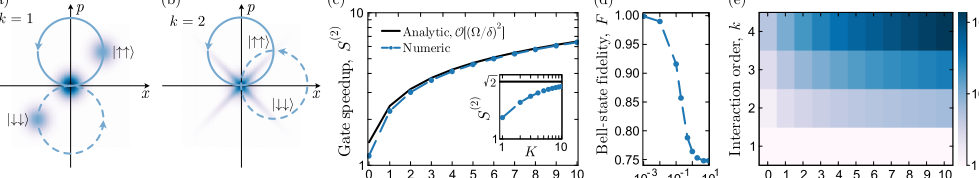
<figcaption class="paper-figure-caption"><b>Fig 1.</b> FIG. 1. Squeezing-mediated geometric phase gates. Wigner function trajectories for one gate duration are shown for spin- dependent (a) displacements (k = 1), and (b) squeezing (k = 2); Wigner functions are shown at t(k) g /4, with the amplitude and phase of the time-dependent displacement and squeezing interactions shown for |↑↑⟩(solid) and |↓↓⟩(dashed) spin states under ˆJz spin-conditioning. Spin states |↑↓⟩and |↓↑⟩remain at the origin for the duration of the gate. (c) Gate speedup for k = 2 and K = 1 as a function of initial Fock state occupation, ni, assuming dynamics truncated at second order in the Magnus expansion (solid) and under full numeric integration of the underlying...</figcaption>
</figure>
<figure class="paper-figure-card">
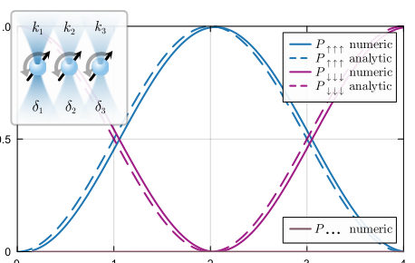
<figcaption class="paper-figure-caption"><b>Fig 2.</b> FIG. 2. Squeezing-mediated 3-body spin interactions. Spin population dynamics under the engineered 3-body interac- tion (solid) and analytic ˆσxˆσxˆσx interaction (dashed). All 3-body spin populations are plotted; populations outside of the P↑↑↑and P↓↓↓subspace (P···) are smaller than the axis width. Inset: Schematic of individually addressed generalized squeezing interactions with squeezing (k1 = 2) on ion 1, and displacements (k2 = k3 = 1) on ions 2 and 3, with detunings (δ1, δ2, δ3) = (3, 2, 1)∆for global detuning ∆.</figcaption>
</figure>
<figure class="paper-figure-card">
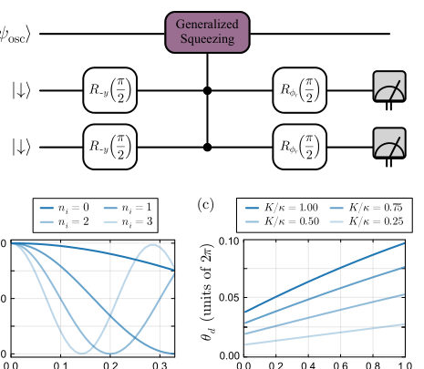
<figcaption class="paper-figure-caption"><b>Fig 3.</b> FIG. 3. Squeezing-mediated thermometry. (a) Circuit dia- gram depicting a spin-conditioned generalized squeezing in- teraction inside a Ramsey sequence on the spin subsystem. (b) Resulting Fock-state (ni) dependent Ramsey fringes mea- sured on the spin subsystem with readout phase ϕr = π/2. (c) Differential phase accumulation for a thermal initial state of the oscillator for varying interaction strength parametrized by κ (see text).</figcaption>
</figure>
<figure class="paper-figure-card">
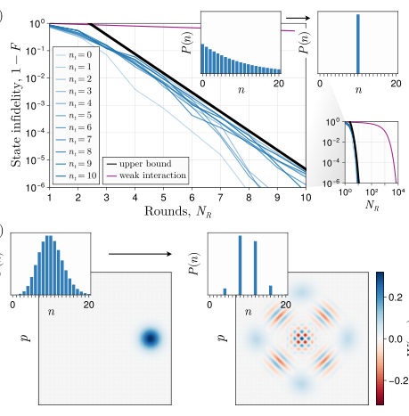
<figcaption class="paper-figure-caption"><b>Fig 4.</b> FIG. 4. Squeezing-mediated bosonic state preparation. (a) Fock state preparation infidelity in the strong interaction pro- tocol (see text) versus number of rounds of the bosonic state preparation sequence, NR, for target Fock states nt = 0 to 10, assuming an initial thermal oscillator state with ¯n = 10 (phonon number distribution shown in the inset). An expo- nential fit to the state infidelity bound is provided (black), in addition to the infidelity for nt = 0 in the weak interaction protocol (magenta and lower right panel). (b) Wigner func- tions and phonon number distributions for a coherent state prepared into the symmetric 4-component cat state.</figcaption>
</figure>
<figure class="paper-figure-card">
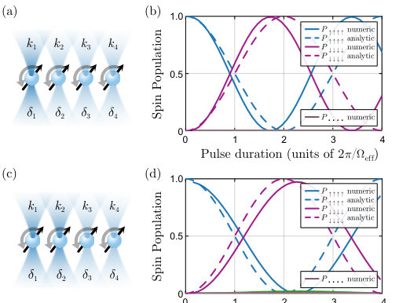
<figcaption class="paper-figure-caption"><b>Fig 5.</b> FIG. 5. Squeezing-mediated 4-body spin interactions. Schematics of individually addressed generalized squeezing in- teractions with (a) trisqueezing (k1 = 3) on ion 1, and dis- placements (k2 = k3 = k4 = 1) on ions 2 through 4, and (c) squeezing (k1 = k2 = 2) on ions 1 and 2, and displacements (k3 = k4 = 1) on ions 3 and 4. (b), (d) Spin population dy- namics under the engineered 4-body interactions (solid) and analytic ˆσxˆσxˆσxˆσx interaction (dashed).</figcaption>
</figure>
</div>

<p><strong>Summary.</strong> This paper details how generalized squeezing interactions can be harnessed to realize several key applications in hybrid spin-oscillator quantum processors. The research focuses on developing fast and high-fidelity methods for both discrete and continuous variable quantum computation and sensing. By leveraging the geometric phase inherent in these interactions, it establishes a robust theoretical framework for next-generation quantum hardware.</p>
<p><strong>Why it may be interesting.</strong> It directly addresses advanced control techniques (generalized squeezing) in hybrid systems, providing concrete protocols for implementing complex quantum gates beyond standard pairwise interactions.</p>
<details>
<summary>Detailed structure</summary>
<p><strong>Main problem.</strong> The work proposes four novel applications for utilizing spin-dependent generalized squeezing interactions to achieve fast, high-fidelity quantum computation and sensing.</p>
<p><strong>Main result.</strong> These applications demonstrate that the geometric phase induced by generalized squeezing provides a foundation for advanced discrete- and continuous-variable quantum processing in hybrid platforms.</p>
<p><strong>Method.</strong> The analysis involves deriving time evolution using the Magnus expansion applied to Hamiltonians describing spin-oscillator coupling, leading to engineered gates and interactions.</p>
<p><strong>Model / system.</strong> The system is a hybrid spin-oscillator platform, modeled by an interaction Hamiltonian involving collective spin operators ($\hat{J}_{	heta,\phi}$) and bosonic ladder operators ($\hat{a}, \hat{a}^\dagger$).</p>
<p><strong>Key observables.</strong> Gate fidelity, gate speedup ($S(k)$), Wigner function trajectories, and the effective Rabi frequency for N-body interactions.</p>
<p><strong>Important parameters / regimes.</strong> The interaction order $k$ of the generalized squeezing, the initial Fock state occupation ($n_i$), and detunings ($\delta_j$) are key parameters.</p>
<p><strong>Assumptions / limitations.</strong> Calculations rely on truncating the Magnus expansion (e.g., to second order), and the set of applications discussed is noted as non-exhaustive.</p>
<p><strong>Figures summary.</strong> Figure 1 illustrates Wigner function trajectories comparing $k=1$ (displacement) and $k=2$ (squeezing) gates, alongside plots showing gate speedup versus initial Fock state occupation.</p>
<p><strong>Paper structure.</strong> The paper systematically investigates four applications: geometric phase gates for two spins/one oscillator; genuine N-body spin interactions; oscillator thermometry via spin readout; and high-fidelity quantum state preparation of the oscillator.</p>
</details>
<details>
<summary>Abstract</summary>
<p>Generalized squeezing interactions are foundational to quantum optics, and have recently come under experimental control in hybrid spin-oscillator quantum processors [O. Băzăvan, et al., Nat. Phys. 22, 757 (2026); S. Saner, et al., Phys. Rev. X 16, 021049 (2026)]. These interactions open the door for new applications in the processing of discrete- and continuous-variable quantum information, four of which we propose and investigate in this work: geometric phase gates mediated by spin-dependent generalized squeezing acting on two spins and a common oscillator; genuine N-body spin interactions mediated by individually addressed spin-dependent generalized squeezing; oscillator thermometry via spin readout; and the preparation of high-fidelity quantum states of the oscillator via spin-dependent generalized squeezing and mid-circuit measurement. A unifying feature of these applications is the geometric phase induced by generalized squeezing interactions, which is nonlinear in the Fock occupation of the oscillator and the interaction order of the generalized squeezing. This work provides a foundation for fast, high-fidelity discrete- and continuous-variable quantum computation and sensing in the hybrid spin-oscillator platform via generalized squeezing.</p>
</details>
<p><sub><a href="#top">↑ back to top</a></sub></p>

<p><a id="paper-2608.04564"></a></p>
<h3 id="quantum-annealers-as-programmable-thermal-machines"><a href="http://arxiv.org/abs/2608.04564v1">Quantum annealers as programmable thermal machines</a></h3>
<p><strong>Authors:</strong> Jakub Pawłowski, Tomasz Śmierzchalski, Fengping Jin, Bartłomiej Gardas, Sebastian Deffner, Zakaria Mzaouali<br>
<strong>Type:</strong> both · <strong>Category:</strong> statistical mechanics · <strong>PDF:</strong> <a href="https://arxiv.org/pdf/2608.04564v1">https://arxiv.org/pdf/2608.04564v1</a><br>
<strong>Analysis basis:</strong> full PDF text, analyzed in chunks
<strong>Topic relevance:</strong> <code>non-equilibrium dynamics</code> <strong>3/5</strong> · <code>non-equilibrium universality</code> <strong>2/5</strong> · <code>Keldysh / 2PI / non-Gaussian methods</code> <strong>1/5</strong> · <code>analog quantum simulation</code> <strong>1/5</strong> · <code>correlated / nonlocal dissipation</code> <strong>1/5</strong> · <code>driven-dissipative phase transition</code> <strong>1/5</strong> · <code>entanglement &amp; information structure</code> <strong>1/5</strong> · <code>methods for driven-dissipative</code> <strong>1/5</strong></p>
<div class="figure-strip-hint">↔ Scroll figures horizontally</div>
<div class="paper-figures-scroll">
<figure class="paper-figure-card">
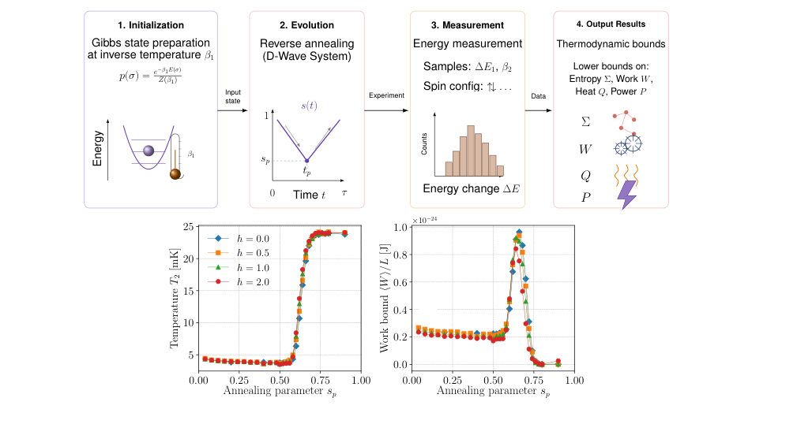
<figcaption class="paper-figure-caption"><b>Fig 1.</b> Fig. 1: Experimental workflow of the paper. A classical Gibbs state of the programmed Ising Hamil- tonian is prepared at unitless inverse temperature β1 = 1 and used as the input state for a reverse annealing schedule. The annealing parameter is ramped from s = 1 to a turning point sp and back to s = 1, so that the initial and final Hamiltonians are the same. The quantum processing unit readout therefore gives a two point energy change ∆E1 of the problem Hamiltonian. Repeating the cycle builds the distribution of ∆E1, from which we estimate an effective environment temperature T2 by pseudo-likelihood thermometry and evaluate fluctuation relation and thermodynamic uncertainty relation bounds...</figcaption>
</figure>
<figure class="paper-figure-card">
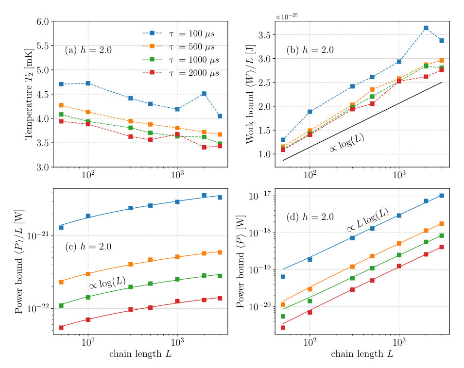
<figcaption class="paper-figure-caption"><b>Fig 2.</b> Fig. 2: Finite size scaling of thermodynamic bounds in a one dimensional chain. For random uniform chains with strong random fields, hi ∈[−2, 2], the reverse annealing turning point is fixed at sp = 0.35 and the chain length L is varied on the D-Wave Advantage6.4 (Pegasus) chip. Panel (a) shows the pseudo-likelihood estimate of the effective temperature T2 for annealing times τ = 100, 500, 1000 and 2000 µs. Panels (b) and (c) show the work and power bounds per spin, which grow slowly with L and are consistent with a logarithmic finite size enhancement over the range studied. Panel (d) shows the total power bound, which grows approximately as L log L when the per-spin contribution is summed...</figcaption>
</figure>
<figure class="paper-figure-card">
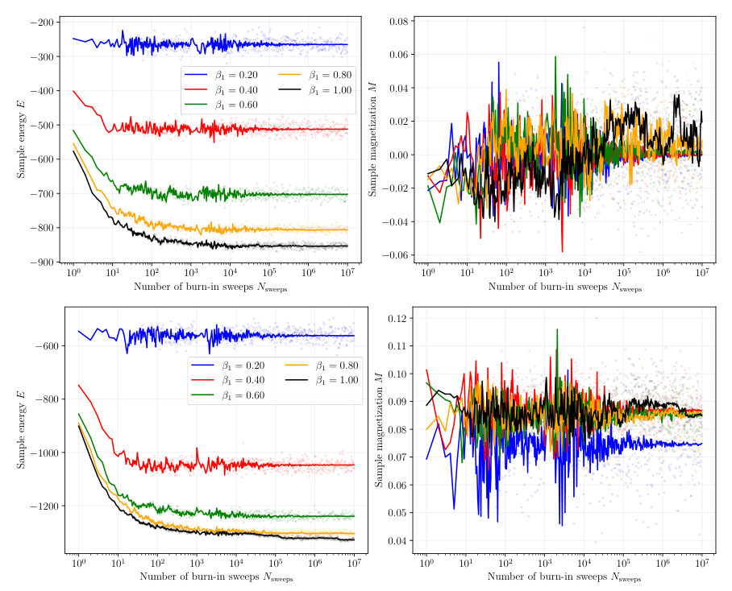
<figcaption class="paper-figure-caption"><b>Fig 3.</b> Fig. 7: Burn-in diagnostics for the Gibbs initial samples. Sample energy E and magnetization M are shown as functions of the number of burn-in sweeps for the RAU (upper row) and CBFM (lower row) Pegasus P6 instances. In both cases the energy reaches a plateau after an initial relaxation period. The RAU magnetization fluctuates around zero, while the CBFM magnetization remains finite because of the biased ferromagnetic structure of the instance. The plateau region is used to choose the burn-in length for the production samples.</figcaption>
</figure>
</div>

<p><strong>Summary.</strong> The paper develops a thermodynamic framework to analyze quantum annealers by treating them as closed thermal cycles. It uses fluctuation theorems to calculate energy exchange quantities like work and entropy production from measured energy changes. This allows researchers to diagnose the underlying physical process—whether it is net heating, cooling, or controlled work extraction—providing deeper insight than performance metrics alone.</p>
<p><strong>Why it may be interesting.</strong> This work provides a rigorous connection between quantum computation performance metrics (like optimization success) and fundamental principles of non-equilibrium statistical mechanics, offering new diagnostics for open quantum systems.</p>
<details>
<summary>Detailed structure</summary>
<p><strong>Main problem.</strong> The paper aims to characterize programmable quantum annealers as closed thermodynamic cycles to assess performance beyond simple solution quality or runtime metrics.</p>
<p><strong>Main result.</strong> By applying fluctuation theorems, the authors derive lower bounds on entropy production, work, and heat exchange, revealing operational regimes (heater, refrigerator, etc.) that quantify energy flow during computation.</p>
<p><strong>Method.</strong> The methodology involves treating the annealer as a thermodynamic system undergoing reverse annealing cycles, using initial/final Ising energies and effective temperature fits to calculate these thermodynamic bounds.</p>
<p><strong>Model / system.</strong> The primary physical platform is the D-Wave quantum annealer (and Advantage hardware), modeled via an Ising Hamiltonian. The analysis applies to 1D chains and higher connectivity instances.</p>
<p><strong>Key observables.</strong> Lower bounds on entropy production ($\Sigma$), Work ($W$), Heat ($Q$), Power ($P$), and the effective environment temperature ($T_2$).</p>
<p><strong>Important parameters / regimes.</strong> Initial inverse temperature ($eta_1$), annealing parameter ($s_p$), cycle time ($ au$), and system size ($N$).</p>
<p><strong>Assumptions / limitations.</strong> The analysis relies on fluctuation identities (like TURs) to derive bounds from limited measurements, and the extracted $T_2$ is an effective temperature of sampled degrees of freedom, not a direct hardware measurement.</p>
<p><strong>Figures summary.</strong> Figures illustrate the experimental workflow using reverse annealing cycles; one shows finite size scaling of work/power bounds for 1D chains, another maps operating modes in the $(eta_1, s_p)$ plane, and others show thermodynamic scans varying initial temperature.</p>
<p><strong>Paper structure.</strong> The paper establishes the thermodynamic framework by defining the cycle, applies this to measure energy exchange on D-Wave hardware across different annealing paths, classifies the operational regime based on input parameters ($eta_1, s_p$), and concludes with device-agnostic diagnostic tools.</p>
</details>
<details>
<summary>Abstract</summary>
<p>Programmable quantum annealers are used for optimization, probabilistic sampling, and simulation, but their performance is commonly reported without the energy exchanged during computation. Here we characterize the D-Wave quantum annealer as a closed thermodynamic cycle. From initial and final Ising energies and an effective temperature fitted to the output distribution, we obtain lower bounds on entropy production, environment energy exchange, work, and power. By varying the prepared distribution and the reverse annealing turning point, we map heater-, accelerator-, refrigerator-, and engine-compatible regimes in one dimensional chains and higher connectivity instances, and apply the same analysis to Advantage and Advantage2 hardware. For an encoded optimization problem, the measured processor energy change states whether final candidates improve or worsen the programmed objective on average. For sampling, the fitted temperature provides an operational measure of how strongly probability is concentrated among low energy configurations. The thermodynamic mode therefore adds information absent from solution quality or runtime alone: it distinguishes driven refinement, net heating, and heat pumping while quantifying their energetic consequences. This framework connects quantum optimization, probabilistic computing, statistical physics simulation, hardware diagnostics, and energy-aware assessment without assuming that a thermodynamic label alone determines computational performance.</p>
</details>
<p><sub><a href="#top">↑ back to top</a></sub></p>

<p><a id="paper-2608.04973"></a></p>
<h3 id="quantum-bayes-correlated-equilibrium-and-the-comparison-of-quantum-information-structures-in-games"><a href="http://arxiv.org/abs/2608.04973v1">Quantum Bayes Correlated Equilibrium and the Comparison of Quantum Information Structures in Games</a></h3>
<p><strong>Authors:</strong> Furkan Sezer<br>
<strong>Type:</strong> theory · <strong>Category:</strong> other · <strong>PDF:</strong> <a href="https://arxiv.org/pdf/2608.04973v1">https://arxiv.org/pdf/2608.04973v1</a><br>
<strong>Analysis basis:</strong> full PDF text, analyzed in chunks
<strong>Topic relevance:</strong> <code>quantum measurements</code> <strong>3/5</strong> · <code>entanglement &amp; information structure</code> <strong>2/5</strong> · <code>measurement-induced transitions</code> <strong>2/5</strong> · <code>Keldysh / 2PI / non-Gaussian methods</code> <strong>1/5</strong> · <code>correlated / nonlocal dissipation</code> <strong>1/5</strong> · <code>driven-dissipative phase transition</code> <strong>1/5</strong> · <code>methods for driven-dissipative</code> <strong>1/5</strong></p>
<div class="figure-strip-hint">↔ Scroll figures horizontally</div>
<div class="paper-figures-scroll">
<figure class="paper-figure-card">
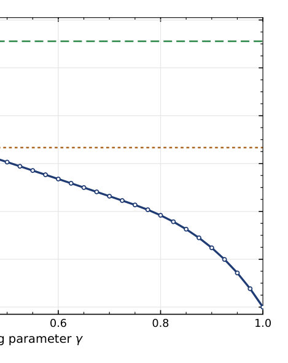
<figcaption class="paper-figure-caption"><b>Fig 1.</b> Figure 1. Maximum average welfare per player over QBCE(G, Qγ) along the de- polarizing chain of Proposition 10.1, each marker being the optimal value of a semi- definite program. Informativeness increases with γ, so the structures are ordered from least informative on the left to most informative on the right. The value is non-increasing, as Theorem 9.4 requires: more information admits fewer equilibrium outcomes and hence a lower best case. It equals 4/3, the maximum over BCE(G, S∅), for γ ≲0.33, where the obedience constraints are slack, and falls to 1 at γ = 1. The first-best value 14/9 is never attained, because joint investment in the bad state is not obedient</figcaption>
</figure>
</div>

<p><strong>Summary.</strong> This work quantizes the comparison of information structures by defining Quantum Bayes Correlated Equilibrium (QBCE). It shows that more detailed information, modeled via a parameter $\gamma$, systematically shrinks the set of possible equilibrium outcomes and lowers the maximum achievable welfare. The methodology relies on translating complex quantum constraints into computable semidefinite programming problems.</p>
<p><strong>Why it may be interesting.</strong> While not directly about AMO systems, the mathematical tools—such as using operator inequalities (Loewner order) to constrain quantum decision processes—are highly relevant for modeling open quantum systems or measurement back-action in quantum control theory.</p>
<details>
<summary>Detailed structure</summary>
<p><strong>Main problem.</strong> The paper builds a quantum analogue of comparing information structures used in games of incomplete information, aiming to quantify how much more informative one structure is compared to another.</p>
<p><strong>Main result.</strong> It establishes that under quantum individual sufficiency, increasing the available information (via the mediator's observation) shrinks the set of possible Quantum Bayes Correlated Equilibrium outcomes and reduces the maximum attainable welfare in every game.</p>
<p><strong>Method.</strong> The authors characterize obedience using a Loewner domination condition between operators on a player's subsystem, allowing the equilibrium set to be computed as a compact spectrahedron via semidefinite programming (SDP).</p>
<p><strong>Model / system.</strong> The model is an extension of classical Bayesian games into quantum settings, where private information is encoded in subsystems and observed by a mediator. The analysis uses general quantum information structures defined by families of density operators.</p>
<p><strong>Key observables.</strong> The equilibrium set (a non-empty compact spectrahedron), the maximum average welfare achievable over the QBCE set, and various comparison relations ($\preceq_{	ext{QIS}}$).</p>
<p><strong>Important parameters / regimes.</strong> A depolarizing parameter $\gamma \in [0, 1]$ is used to interpolate between different information structures, controlling the amount of noise or information retained.</p>
<p><strong>Assumptions / limitations.</strong> The analysis relies on defining quantum individual sufficiency and comparing structures via Loewner domination; exact equivalence with classical constraints holds only under specific conditions (e.g., simultaneous diagonalizability).</p>
<p><strong>Figures summary.</strong> Figure 1 illustrates the maximum average welfare per player as a non-increasing function of the depolarizing parameter $\gamma$, showing plateaus and subsequent drops.</p>
<p><strong>Paper structure.</strong> The paper develops the QBCE concept, proves the Loewner characterization for obedience, establishes that the equilibrium set is an SDP-computable spectrahedron, and finally proves the comparison theorem by analyzing how information structure parameters ($\gamma$) affect welfare maximization.</p>
</details>
<details>
<summary>Abstract</summary>
<p>Bergemann and Morris (2016) show that one information structure is more informative than another exactly when it induces a smaller set of Bayes correlated equilibrium outcomes in every game. We build the quantum analogue. An information structure becomes a family of density operators indexed by the payoff state, which the mediator observes. We show that obedience is equivalent to a Loewner domination between operators on one player's subsystem. The equilibrium set is then a nonempty compact spectrahedron computable by semidefinite programming, classical structures embed exactly, and under quantum individual sufficiency more information shrinks the equilibrium set in every game.</p>
</details>
<p><sub><a href="#top">↑ back to top</a></sub></p>

<p><a id="paper-2608.04748"></a></p>
<h3 id="residual-saturation-under-pressure-controlled-drainage"><a href="http://arxiv.org/abs/2608.04748v1">Residual Saturation under Pressure-Controlled Drainage</a></h3>
<p><strong>Authors:</strong> Fernando Alonso-Marroquin, Hans J. Herrmann<br>
<strong>Type:</strong> theory · <strong>Category:</strong> statistical mechanics · <strong>PDF:</strong> <a href="https://arxiv.org/pdf/2608.04748v1">https://arxiv.org/pdf/2608.04748v1</a><br>
<strong>Analysis basis:</strong> full PDF text, analyzed in chunks
<strong>Topic relevance:</strong> <code>non-equilibrium universality</code> <strong>3/5</strong> · <code>non-equilibrium dynamics</code> <strong>2/5</strong> · <code>Keldysh / 2PI / non-Gaussian methods</code> <strong>1/5</strong> · <code>analog quantum simulation</code> <strong>1/5</strong> · <code>correlated / nonlocal dissipation</code> <strong>1/5</strong> · <code>driven-dissipative phase transition</code> <strong>1/5</strong> · <code>entanglement &amp; information structure</code> <strong>1/5</strong> · <code>methods for driven-dissipative</code> <strong>1/5</strong></p>
<div class="figure-strip-hint">↔ Scroll figures horizontally</div>
<div class="paper-figures-scroll">
<figure class="paper-figure-card">
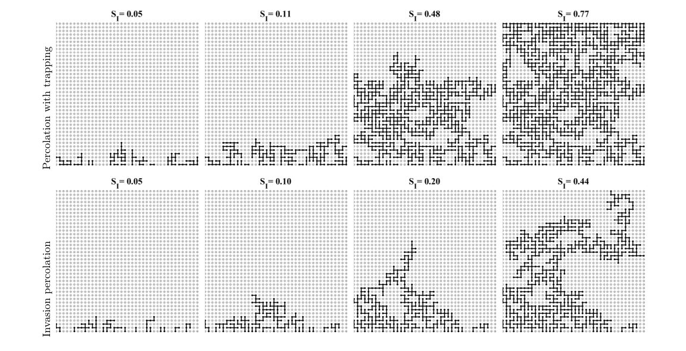
<figcaption class="paper-figure-caption"><b>Fig 1.</b> FIG. 1. Snapshots of invasion on the same random porous network at different saturation stages for bond percolation with trapping (BPT, top row) and invasion percolation (IP, bottom row). The bottom and top boundaries define the inlet and outlet nodes, while the left and right boundaries are impermeable no-flow boundaries, i.e., periodic boundary conditions are not used in the horizontal direction. The invaded-phase saturation SI is the portion of the network reached from the inlet. The final states (last column) show SI = 77% for BPT, due to trapping of defending-fluid regions disconnected from the outlet, and SI = 44% for IP, due to early breakthrough and bypassing by the ramified...</figcaption>
</figure>
<figure class="paper-figure-card">
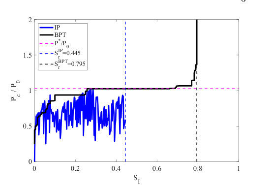
<figcaption class="paper-figure-caption"><b>Fig 2.</b> FIG. 2. Pressure–saturation curves for the square lattice of Fig. 1. black: bond percolation with trapping. Blue: invasion percolation. dashed horizontal line is the entry pressure. The dashed vertical lines indicate the final residual saturation for the trapped percolation model and invasion percolation.The p−increment is ∆p = 10−3.</figcaption>
</figure>
<figure class="paper-figure-card">
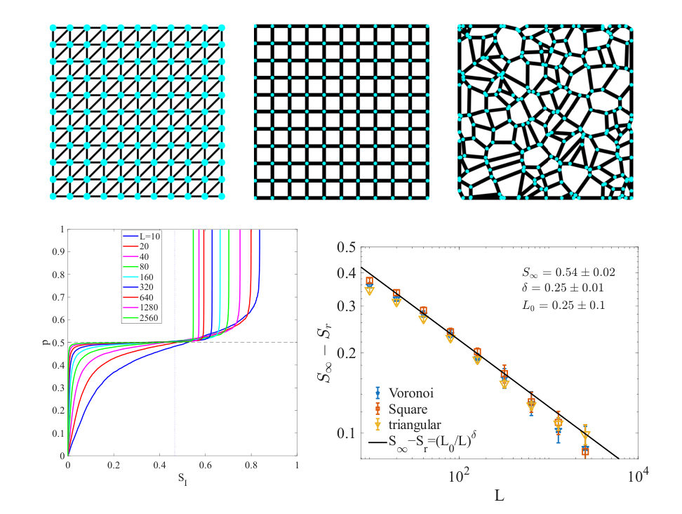
<figcaption class="paper-figure-caption"><b>Fig 3.</b> FIG. 3. Top: lattices used in the 2D analysis, from left to right: triangular, square, and Voronoi. Bottom left: bond occupancy versus invaded-phase saturation for square lattices of increasing size. The dashed lines indicate the classical bond-percolation threshold. The dotted line marks the infinite-system value SI,∞(1) = 1 −S∞≈0.46. Bottom right: residual saturation versus lattice size for triangular (triangles), square (squares), and Voronoi (stars) lattices. Here Sr(L) denotes the residual saturation for a system of size L, and S∞is its infinite-size limit value. The solid line is the fit of Eq. 7. The p−increment in BPT is ∆p = 10−3.</figcaption>
</figure>
<figure class="paper-figure-card">
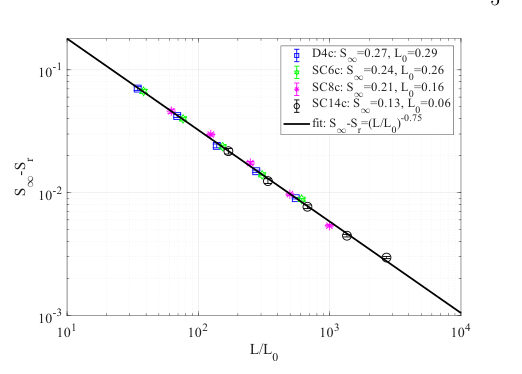
<figcaption class="paper-figure-caption"><b>Fig 4.</b> FIG. 4. Residual-saturation scaling in 3D pore-network lat- tices: S∞−Sr versus normalized system size L/L0 on log–log axes. Results are shown for the four lattices D4c, SC6c, SC8c, and SC14c, where the suffix “c” denotes periodic boundary conditions in the transverse directions (x and y), while the displacement direction is non-periodic. Symbols show ensem- ble means over 96 realizations at each L = 10, 20, 40, 80, 160, with error bars indicating the standard error. The solid line indicates the best-fit power law (L0/L)δ. The p−increment in BPT is ∆p = 10−3.</figcaption>
</figure>
</div>

<p><strong>Summary.</strong> This paper models liquid drainage through porous media by comparing two theoretical frameworks: standard invasion percolation (IP) and pressure-controlled drainage modeled as bond percolation with trapping (BPT). The key finding is that BPT predicts a finite residual saturation in the infinite limit, unlike IP. The work uses scaling laws to characterize how these differences manifest across various dimensions.</p>
<p><strong>Why it may be interesting.</strong> While focused on fluid dynamics in porous media, the rigorous application of percolation theory, fractal geometry, and finite-size scaling laws connects to critical phenomena studied extensively in statistical mechanics, which shares mathematical tools with quantum many-body systems.</p>
<details>
<summary>Detailed structure</summary>
<p><strong>Main problem.</strong> The study compares residual saturation under pressure-controlled drainage versus standard invasion percolation theory.</p>
<p><strong>Main result.</strong> Pressure-controlled drainage leads to a finite, non-zero residual saturation in the infinite limit, contrasting with invasion percolation's prediction that the invaded phase saturation vanishes asymptotically.</p>
<p><strong>Method.</strong> The process is modeled using bond percolation with trapping (BPT) on a pore-network graph and analyzed by comparing its results against standard invasion percolation (IP).</p>
<p><strong>Model / system.</strong> The physical system is liquid invasion into porous media, modeled via a pore-network graph. The theory compares two drainage mechanisms: IP (local advancement) and BPT (pressure-controlled filling with trapping).</p>
<p><strong>Key observables.</strong> Invasion-phase saturation ($S_I$), residual saturation ($S_r$), and finite-size scaling exponents ($\delta$).</p>
<p><strong>Important parameters / regimes.</strong> Pore network size ($L$), dimensionality (2D vs 3D), and bond occupancy ($p$) related to capillary pressure.</p>
<p><strong>Assumptions / limitations.</strong> The analysis relies on fitting power laws to determine asymptotic behavior, and pore-shape effects are noted as remaining important for quantitative comparison with experiments.</p>
<p><strong>Figures summary.</strong> Figures compare BPT and IP saturation curves on lattices; one figure shows snapshots illustrating the difference in invaded regions; another details residual saturation scaling across different lattice sizes and dimensions.</p>
<p><strong>Paper structure.</strong> The paper establishes the theoretical framework by formulating drainage as bond percolation with trapping, derives key results contrasting it with invasion percolation (especially regarding finite-size scaling), and analyzes dimensionality dependence through simulations on various lattices.</p>
</details>
<details>
<summary>Abstract</summary>
<p>Here, pressure-controlled drainage is formulated as bond percolation with trapping on the pore-network graph, establishing a direct connection between percolation theory and pressure--saturation relations. In two dimensions, the deviation of the residual saturation from its non-vanishing thermodynamic limit obeys a finite-size scaling law with exponent $δ\approx 0.25$, independent of microscopic details of the lattice. In three dimensions, finite-size corrections decay more rapidly ($δ\approx 0.75$), while the asymptotic residual saturation remains finite and depends on coordination number. This extends the standard invasion-percolation picture beyond the breakthrough state, where the invading cluster is fractal and the invaded-phase saturation vanishes in the infinite-size limit.</p>
</details>
<p><sub><a href="#top">↑ back to top</a></sub></p>

<p><a id="paper-2608.04119"></a></p>
<h3 id="experimental-kuramoto-platform"><a href="http://arxiv.org/abs/2608.04119v1">Experimental Kuramoto Platform</a></h3>
<p><strong>Authors:</strong> Leandro Freitas, Victor H. S. Bittencourt, Débora D. Superbi, Wanderley C. Silva Junior, Arthur N. Montanari, Luis A. Aguirre<br>
<strong>Type:</strong> experiment · <strong>Category:</strong> disordered systems and neural networks · <strong>PDF:</strong> <a href="https://arxiv.org/pdf/2608.04119v1">https://arxiv.org/pdf/2608.04119v1</a><br>
<strong>Analysis basis:</strong> full PDF text, analyzed in chunks
<strong>Topic relevance:</strong> <code>driven-dissipative phase transition</code> <strong>3/5</strong> · <code>non-equilibrium dynamics</code> <strong>2/5</strong> · <code>non-equilibrium universality</code> <strong>2/5</strong> · <code>Frenkel-Kontorova</code> <strong>1/5</strong> · <code>correlated / nonlocal dissipation</code> <strong>1/5</strong> · <code>methods for driven-dissipative</code> <strong>1/5</strong></p>
<div class="figure-strip-hint">↔ Scroll figures horizontally</div>
<div class="paper-figures-scroll">
<figure class="paper-figure-card">
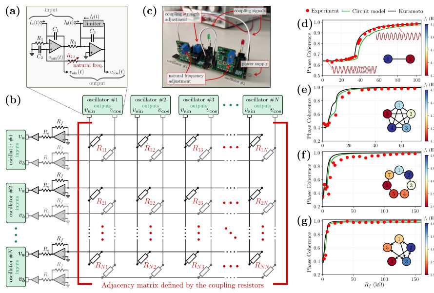
<figcaption class="paper-figure-caption"><b>Fig 1.</b> FIG. 1. Experimental platform of the Kuramoto model. (a) Circuit diagram of a quadrature oscillator [15] with two input (Ia, Ib) and two output (vsin, vcos) signals. The oscillator natural frequency ωi is tuned via the potentiometer R2,i. The complete circuit diagram is shown in SM [16], Fig. S1. (b) Coupling circuit implementing the adjacency matrix, with entries defined by the coupling resistors Rij. The resistors Rf control the global coupling strength K. (c) Printed circuit board (PCB) of a pair of coupled quadrature oscillator. (d–g) Experimental validation of the synchronization transition as a function of the coupling strength, shown for different network structures: (d) symmetric...</figcaption>
</figure>
<figure class="paper-figure-card">
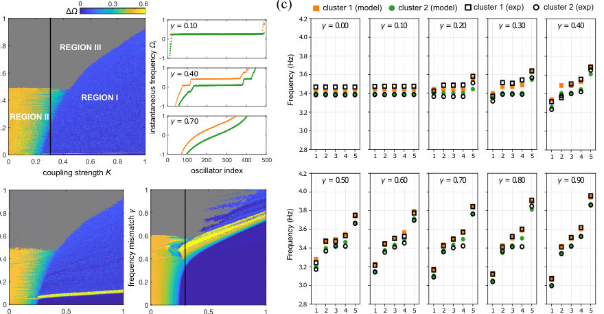
<figcaption class="paper-figure-caption"><b>Fig 2.</b> FIG. 2. Cluster synchronization in the experimental Kuramoto platform. (a) (K, γ)-phase diagram in a weakly coupled network of two clusters, each with M = 500 Kuramoto oscillators. Color bar represents the instantaneous frequency mismatch ∆Ωbetween the two clusters. Regions I, II, and III correspond respectively to global synchronization (blue region, where ∆Ω≈0), cluster synchronization (light blue to yellow region, where ∆Ω&gt; 0), and desynchronization (gray region). The right panels show the instantaneous frequencies Ωi of individual oscillators, color-coded by cluster, for representative values of γ and fixed K = 0.3. (b) (K, γ)-phase diagram for smaller cluster sizes: M = 50 (left) and M...</figcaption>
</figure>
</div>

<p><strong>Summary.</strong> The authors present an experimental platform built from electronic quadrature oscillators designed to model coupled oscillator systems governed by the Kuramoto model. By employing a novel non-diffusive coupling circuit, they successfully demonstrate that their hardware can accurately reproduce phase transitions and synchronization behaviors across both weak and strong coupling regimes. This offers a cost-effective tool for systematically validating complex theoretical models of collective dynamics.</p>
<p><strong>Why it may be interesting.</strong> This work provides a tangible, low-cost hardware testbed for complex collective dynamics models (like Kuramoto), allowing experimental validation of theoretical predictions in parameter regimes previously inaccessible due to weak-coupling assumptions.</p>
<details>
<summary>Detailed structure</summary>
<p><strong>Main problem.</strong> Connecting analytical results from the Kuramoto model, derived via phase reduction, to experimental data is challenging because many physical platforms violate the weak-coupling assumptions.</p>
<p><strong>Main result.</strong> The proposed electronic platform successfully reproduces Kuramoto model dynamics for both weak and strong coupling regimes across various network topologies.</p>
<p><strong>Method.</strong> The authors designed an experimental circuit using electronic quadrature oscillators coupled via a novel non-diffusive architecture to map oscillator dynamics onto the required sinusoidal phase coupling.</p>
<p><strong>Model / system.</strong> The system uses electronic quadrature oscillators whose phase dynamics are engineered to mimic the Kuramoto model ($\dot{\phi}_i = \omega_i + K \sum A_{ij} \sin(\phi_j - \phi_i)$). The coupling is achieved using external currents in a non-diffusive circuit.</p>
<p><strong>Key observables.</strong> Phase coherence, order parameter (R), and observation of phase transitions (global and cluster synchronization).</p>
<p><strong>Important parameters / regimes.</strong> Coupling strength ($K$), network topology (e.g., ring, all-to-all, directed), frequency mismatch ($\Delta\Omega$).</p>
<p><strong>Assumptions / limitations.</strong> The platform aims to achieve equivalence without relying on conventional weak-coupling phase-reduction assumptions; however, the initial coupling implementation is noted as being inherently diffusive.</p>
<p><strong>Figures summary.</strong> Figures demonstrate validation of synchronization transitions for different topologies (symmetric, all-to-all, ring, directed) and illustrate the $(K, \gamma)$-phase diagram for cluster synchronization.</p>
<p><strong>Paper structure.</strong> The paper introduces the physical challenge, details the quadrature oscillator platform and non-diffusive coupling circuit, demonstrates its ability to reproduce Kuramoto phase transitions across various regimes, and concludes by outlining future extensions like implementing signed networks or adaptive control.</p>
</details>
<details>
<summary>Abstract</summary>
<p>Phase reduction provides a principled relationship between high-dimensional oscillator dynamics and low-dimensional phase models such as the Kuramoto model. However, connecting analytical results derived from the Kuramoto framework to experimental data remains an open challenge, as many physical platforms violate the weak-coupling assumptions underlying standard phase reduction. Here, we present an experimental platform based on electronic quadrature oscillators whose phase dynamics are, under certain assumptions, equivalent to the Kuramoto model. Crucially, this equivalence is achieved for both weak and strong coupling through a non-diffusive coupling circuit, and the design approach supports arbitrary (weighted and directed) network topologies while preserving scalability and oscillation regularity. Across different coupling schemes, we demonstrate that the platform reliably reproduces phase transitions predicted by the Kuramoto model for both global and cluster synchronization. This cost-effective platform enables systematic experimental validation of analytical and numerical results for synchronization in complex networks.</p>
</details>
<p><sub><a href="#top">↑ back to top</a></sub></p>

<p><a id="paper-2608.04129"></a></p>
<h3 id="gibbs-variational-principles-and-boltzmann-irreversible-theorem"><a href="http://arxiv.org/abs/2608.04129v1">Gibbs variational principles and Boltzmann irreversible theorem</a></h3>
<p><strong>Authors:</strong> Mário J. de Oliveira, Silvio R. Salinas<br>
<strong>Type:</strong> theory · <strong>Category:</strong> statistical mechanics · <strong>PDF:</strong> <a href="https://arxiv.org/pdf/2608.04129v1">https://arxiv.org/pdf/2608.04129v1</a><br>
<strong>Analysis basis:</strong> full PDF text, analyzed in chunks
<strong>Topic relevance:</strong> <code>non-equilibrium dynamics</code> <strong>3/5</strong> · <code>non-equilibrium universality</code> <strong>2/5</strong> · <code>Keldysh / 2PI / non-Gaussian methods</code> <strong>1/5</strong> · <code>analog quantum simulation</code> <strong>1/5</strong> · <code>correlated / nonlocal dissipation</code> <strong>1/5</strong> · <code>driven-dissipative phase transition</code> <strong>1/5</strong> · <code>methods for driven-dissipative</code> <strong>1/5</strong></p>
<div class="figure-strip-hint">↔ Scroll figures horizontally</div>
<div class="paper-figures-scroll">
<figure class="paper-figure-card">
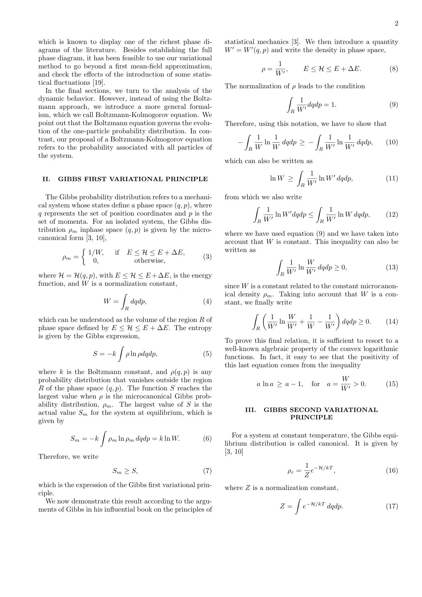
<figcaption class="paper-figure-caption"><b>Fig 1.</b> Low-resolution page preview, page 2</figcaption>
</figure>
<figure class="paper-figure-card">
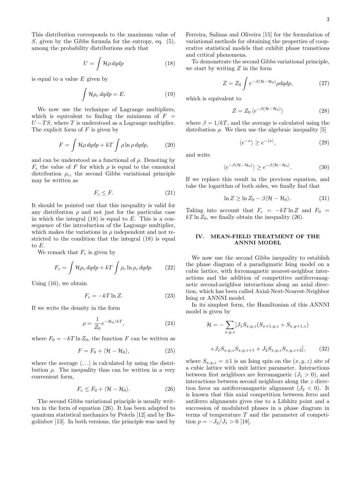
<figcaption class="paper-figure-caption"><b>Fig 2.</b> Low-resolution page preview, page 3</figcaption>
</figure>
<figure class="paper-figure-card">
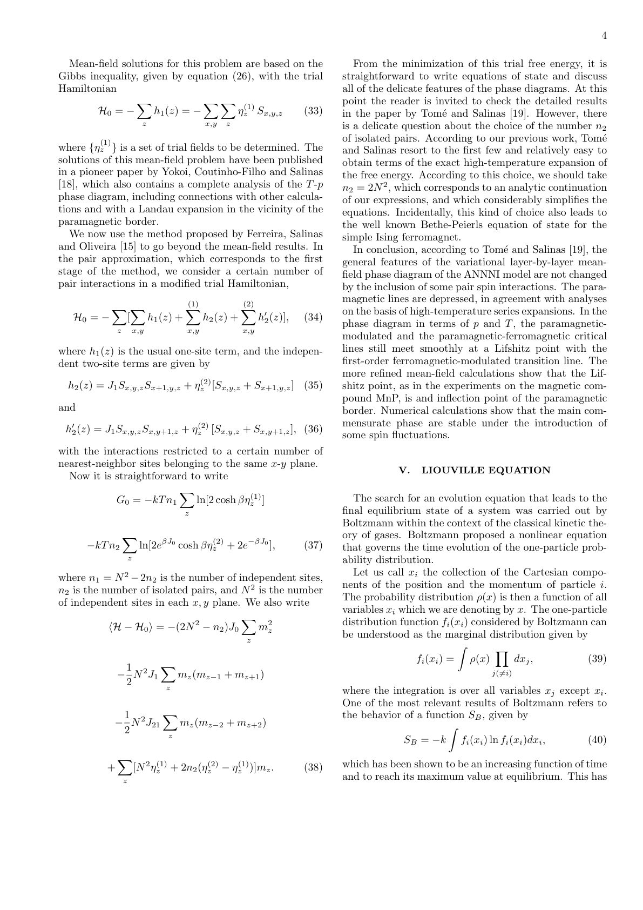
<figcaption class="paper-figure-caption"><b>Fig 3.</b> Low-resolution page preview, page 4</figcaption>
</figure>
<figure class="paper-figure-card">
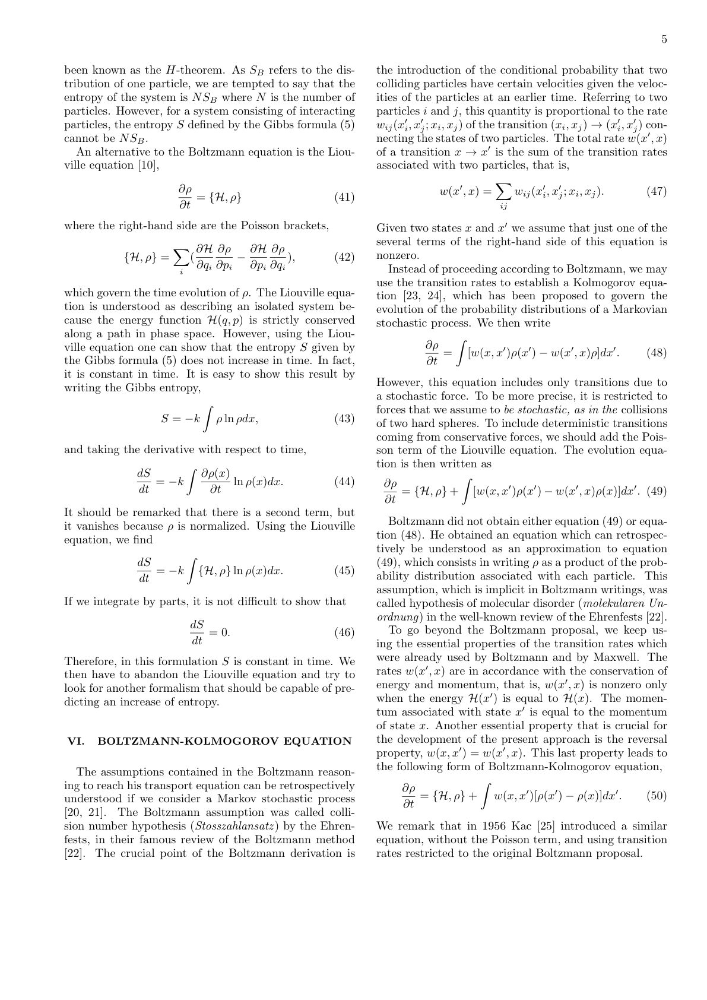
<figcaption class="paper-figure-caption"><b>Fig 4.</b> Low-resolution page preview, page 5</figcaption>
</figure>
<figure class="paper-figure-card">
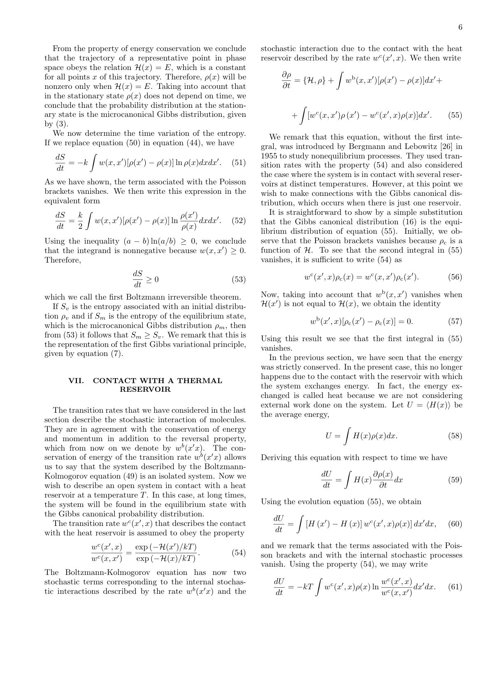
<figcaption class="paper-figure-caption"><b>Fig 5.</b> Low-resolution page preview, page 6</figcaption>
</figure>
</div>

<p><strong>Summary.</strong> This paper unifies concepts from equilibrium and non-equilibrium statistical mechanics by showing that the Gibbs variational principles are mathematically equivalent to the Boltzmann irreversible theorems. Using stochastic evolution equations, it derives bounds on entropy increase and free energy decrease for both isolated and open quantum/classical systems.</p>
<p><strong>Why it may be interesting.</strong> This work provides a deep theoretical link between equilibrium statistical mechanics (variational principles) and non-equilibrium dynamics (irreversibility theorems), which is fundamental for understanding relaxation processes in complex quantum or classical systems.</p>
<details>
<summary>Detailed structure</summary>
<p><strong>Main problem.</strong> The paper analyzes Gibbs variational principles for systems isolated or at constant temperature, aiming to connect these principles rigorously to the Boltzmann irreversible theorems.</p>
<p><strong>Main result.</strong> It establishes that both the first (entropy increase) and second (free energy decrease) Boltzmann irreversible theorems are mathematically equivalent to the corresponding Gibbs variational inequalities ($S_m \ge S$ and $F_c \le F$).</p>
<p><strong>Method.</strong> The analysis uses stochastic evolution equations, specifically a modified Boltzmann-Kolmogorov equation, alongside thermodynamic derivations involving free energy minimization.</p>
<p><strong>Model / system.</strong> The primary model studied is the Axial-Next-Nearest-Neighbor Ising (ANNNI) model on a cubic lattice. The framework extends to general open systems interacting with thermal reservoirs.</p>
<p><strong>Key observables.</strong> Entropy ($S$), Free Energy ($F = U - TS$), and the time evolution of these quantities ($\mathrm{d}S/\mathrm{d}t$ and $\mathrm{d}F/\mathrm{d}t$).</p>
<p><strong>Important parameters / regimes.</strong> Interaction coupling constants ($J_1, J_2$) defining the ANNNI Hamiltonian; temperature $T$; and system volume/size.</p>
<p><strong>Assumptions / limitations.</strong> The derivation of irreversible theorems relies on assuming specific forms for transition rates (detailed balance) and utilizing inequalities like Jensen's inequality.</p>
<p><strong>Figures summary.</strong> Not specified, but the analysis involves deriving equations of state and phase diagrams for the ANNNI model using variational methods.</p>
<p><strong>Paper structure.</strong> The paper progresses by first defining Gibbs principles for isolated/canonical systems, then introducing a generalized Boltzmann-Kolmogorov equation to describe time evolution. It subsequently derives the irreversible theorems ($\mathrm{d}S/\mathrm{d}t \ge 0$ and $\mathrm{d}F/\mathrm{d}t \le 0$) and finally proves their equivalence to the variational bounds.</p>
</details>
<details>
<summary>Abstract</summary>
<p>We analyze the Gibbs variational principles associated with the probability distributions of (i) an isolated system and (ii) a system at constant temperature. We give an example of using the Gibbs inequality to obtain the free energy and analyze the phase diagram of an Ising model with competing interactions. We also review the Boltzmann irreversible theorem, and show how it is connected to the Gibbs variational principles. This connection is established by using the Kolmogorov equation for the evolution of the probability distribution, which predicts a monotonic increase of entropy for an isolated system, and a decrease of the free energy for a system in contact with a thermal reservoir.</p>
</details>
<p><sub><a href="#top">↑ back to top</a></sub></p>

<p><a id="paper-2608.04476"></a></p>
<h3 id="heralded-non-gaussian-squeezed-state-inputs-for-parity-detection-su11-interferometry"><a href="http://arxiv.org/abs/2608.04476v1">Heralded Non-Gaussian Squeezed-State Inputs for Parity-Detection SU(1,1) Interferometry</a></h3>
<p><strong>Authors:</strong> Lifen Guo, Qingqian Kang, Teng Zhao, Cunjin Liu, Xin Su, Liyun Hu<br>
<strong>Type:</strong> theory · <strong>Category:</strong> other · <strong>PDF:</strong> <a href="https://arxiv.org/pdf/2608.04476v1">https://arxiv.org/pdf/2608.04476v1</a><br>
<strong>Analysis basis:</strong> full PDF text, analyzed in chunks
<strong>Topic relevance:</strong> <code>quantum measurements</code> <strong>3/5</strong> · <code>interference shaping light</code> <strong>2/5</strong> · <code>measurement-induced transitions</code> <strong>2/5</strong> · <code>Keldysh / 2PI / non-Gaussian methods</code> <strong>1/5</strong> · <code>driven-dissipative phase transition</code> <strong>1/5</strong> · <code>entanglement &amp; information structure</code> <strong>1/5</strong></p>
<div class="figure-strip-hint">↔ Scroll figures horizontally</div>
<div class="paper-figures-scroll">
<figure class="paper-figure-card">
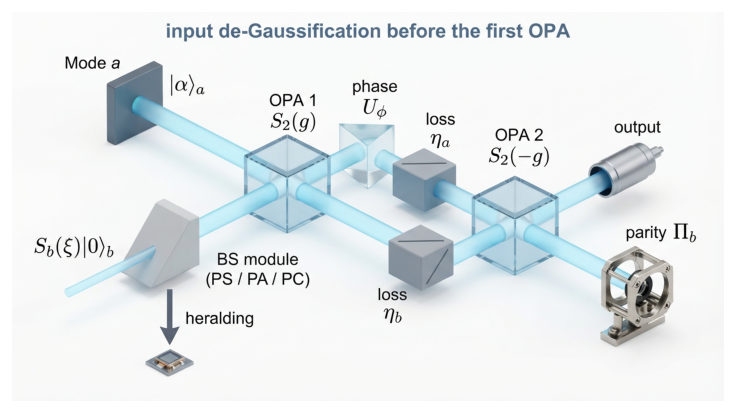
<figcaption class="paper-figure-caption"><b>Fig 1.</b> FIG. 1. SU(1,1) interferometer with input-side non-Gaussian state preparation. A coherent state enters mode a. The squeezed vacuum in mode b is mixed with ancillary mode c, prepared in a Fock state, in a heralded beam-splitter module. The choices (µ, ν) = (0, m), (m, 0), and (m, m) give m-photon subtraction, addition, and catalysis, respectively. The conditional product input enters the first optical parametric amplifier, acquires a phase shift in mode a, and is recombined by the inverse amplifier. Section IV introduces internal transmissions ηa and ηb before the output parity measurement on mode b.</figcaption>
</figure>
<figure class="paper-figure-card">
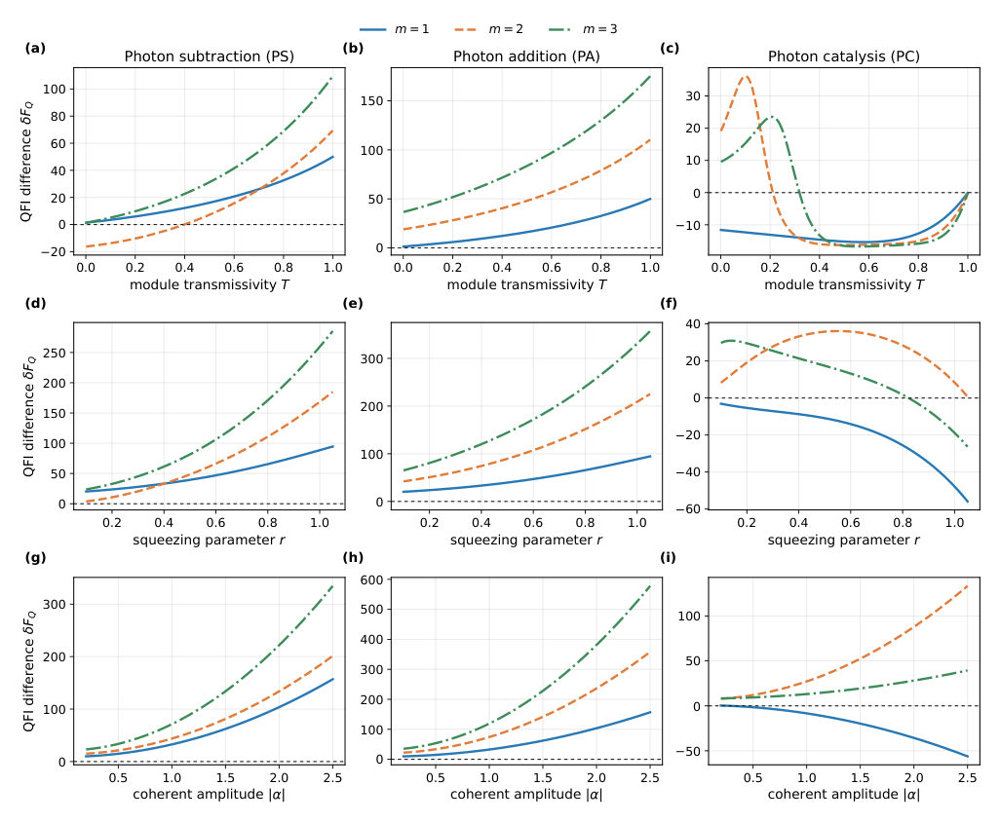
<figcaption class="paper-figure-caption"><b>Fig 2.</b> FIG. 2. Conditional QFI difference δF (j,m) Q = F (j,m) Q −F (G) Q for PS, PA, and PC at m = 1, 2, 3 and g = 0.75. The first row varies the module transmissivity T at r = 0.55 and |α| = 1.2. The second row varies r at |α| = 1.2; the third row varies |α| at r = 0.55. The last two rows use T = 0.93 for PS and PA and T = 0.10 for PC. Positive values denote a conditional QFI improvement. Color and line style jointly identify the operation order; heralding probability is not included.</figcaption>
</figure>
<figure class="paper-figure-card">
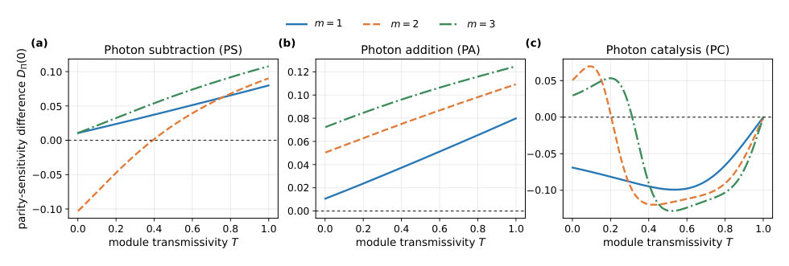
<figcaption class="paper-figure-caption"><b>Fig 3.</b> FIG. 3. Dark-point parity-sensitivity difference D(j,m) Π (0) = ∆ϕ(G) Π (0) −∆ϕ(j,m) Π (0) as a function of the heralding-module transmissivity for PS, PA, and PC at m = 1, 2, 3. Parameters are r = 0.55, |α| = 1.2, and g = 0.75. Positive values favor the conditional non-Gaussian probe. Color and line style jointly identify m = 1, 2, 3; panels are labeled (a)–(c).</figcaption>
</figure>
<figure class="paper-figure-card">

<figcaption class="paper-figure-caption"><b>Fig 4.</b> FIG. 4. Conditional ideal parity phase sensitivity in the local working window, evaluated from the single-mode kernel Pϕ. All curves are conditioned on a successful heralding event, so the heralding probability is not included. Parameters are r = 0.55, |α| = 1.2, g = 0.75, and T = 0.93.</figcaption>
</figure>
<figure class="paper-figure-card">

<figcaption class="paper-figure-caption"><b>Fig 5.</b> FIG. 5. Conditional dark-point sensitivity difference D(j,m) Π (0) (dashed curves) and its probability-weighted diagnostic eD(j,m) Π (0) = P (m) j D(j,m) Π (0) (solid curves) versus module transmissivity. Parameters are r = 0.55, |α| = 1.2, and g = 0.75. Weighting changes the magnitude, not the sign or zero crossings.</figcaption>
</figure>
</div>

<p><strong>Summary.</strong> This paper theoretically analyzes how non-Gaussian photon states generated via subtraction, addition, or catalysis can enhance phase estimation in an SU(1,1) interferometer. While these operations show promise under certain conditions, the authors conclude that for practical resource constraints, optimized Gaussian inputs still outperform them. The work establishes a critical boundary between theoretical quantum enhancement and experimentally achievable precision.</p>
<p><strong>Why it may be interesting.</strong> This work provides a rigorous, quantitative boundary condition for quantum metrology, showing that theoretical potential (high local QFI) does not always translate into achievable precision when realistic measurement limitations (like parity detection or fixed resources) are imposed.</p>
<details>
<summary>Detailed structure</summary>
<p><strong>Main problem.</strong> The paper compares the metrological advantage of using heralded non-Gaussian squeezed-state inputs (via photon subtraction, addition, or catalysis) versus standard Gaussian inputs in a parity-detection SU(1,1) interferometer for phase estimation.</p>
<p><strong>Main result.</strong> While single-photon PS and PA improve conditional information at high transmissivity, under strict resource constraints, the optimized Gaussian benchmark remains superior to all tested non-Gaussian operations. Photon catalysis shows promise only in low-transmissivity regimes.</p>
<p><strong>Method.</strong> The authors developed a unified finite-transmissivity map to calculate conditional moments and Quantum Fisher Information (QFI) for these non-Gaussian inputs within the interferometer framework.</p>
<p><strong>Model / system.</strong> The system is an SU(1,1) interferometer where one mode receives a coherent state $|\alpha
angle$ and another receives a squeezed vacuum $|\xi
angle$. Non-Gaussian states are heralded by projecting ancillary modes using photon subtraction (PS), addition (PA), or catalysis (PC).</p>
<p><strong>Key observables.</strong> Quantum Fisher Information (QFI) for phase estimation, conditional moments ($\langle \hat{O} 
angle^{(m)}_j$), and the dark-point parity observable.</p>
<p><strong>Important parameters / regimes.</strong> Transmissivity $T$, squeezing parameter $r$, interferometer gain $g$, and the specific type of heralding operation (PS, PA, PC).</p>
<p><strong>Assumptions / limitations.</strong> The conclusion is highly constrained by fixed preparation parameters, fixed gain, parity readout, and the exclusion of full joint optimization over all resource allocations.</p>
<p><strong>Figures summary.</strong> Figure 1 illustrates the SU(1,1) interferometer setup incorporating the heralded non-Gaussian state generation module using a beam-splitter and ancillary mode projection.</p>
<p><strong>Paper structure.</strong> The paper establishes the theoretical framework by deriving conditional operators for PS, PA, and PC. It then calculates the QFI based on these inputs, comparing them systematically against the Gaussian benchmark under various loss and resource constraints to draw conclusions about practical utility.</p>
</details>
<details>
<summary>Abstract</summary>
<p>Non-Gaussian operations can reshape the photon statistics of continuous-variable probes, but their metrological advantage is meaningful only when heralding probability and photon-number resources are counted consistently. We compare photon subtraction, photon addition, and photon catalysis as input-side heralding operations in a balanced SU(1,1) interferometer with parity detection. A unified finite-transmissivity map supplies closed conditional moments and the corresponding quantum Fisher information at arbitrary operation order; internal loss is absorbed into a single effective parity observable whose lossless limit recovers the ideal pulled-back measurement. At fixed preparation parameters, single-photon subtraction and addition improve the conditional phase information over the Gaussian reference across most of the high-transmissivity regime, while multi-photon catalysis opens useful low-transmissivity windows. However, when the coherent--squeezed allocation is independently optimized at fixed conditional-probe energy and fixed interferometer gain, the success-weighted Fisher information of all three non-Gaussian operations remains below the optimized Gaussian benchmark. This conclusion is subject to the tested constraints: single-photon operations, a coherent-plus-squeezed-vacuum Gaussian family, fixed gain, and parity readout. Photon catalysis separately generates a conditional branch with high local quantum Fisher information that dark-point parity extracts poorly, identifying a measurement mismatch rather than a state-preparation failure. The result draws a sharp boundary between conditional non-Gaussian enhancement and practically available precision under explicitly stated resource constraints.</p>
</details>
<p><sub><a href="#top">↑ back to top</a></sub></p>

<p><a id="paper-2608.04263"></a></p>
<h3 id="poisson-compiled-quantum-singular-value-transformation-for-power-exponential-dissipation"><a href="http://arxiv.org/abs/2608.04263v1">Poisson-Compiled Quantum Singular Value Transformation for Power-Exponential Dissipation</a></h3>
<p><strong>Authors:</strong> Chao Wang, Xi-Ning Zhuang, Menghan Dou, Zhao-Yun Chen, Guo-Ping Guo<br>
<strong>Type:</strong> theory · <strong>Category:</strong> quantum information and computing · <strong>PDF:</strong> <a href="https://arxiv.org/pdf/2608.04263v1">https://arxiv.org/pdf/2608.04263v1</a><br>
<strong>Analysis basis:</strong> full PDF text, analyzed in chunks
<strong>Topic relevance:</strong> <code>methods for driven-dissipative</code> <strong>3/5</strong> · <code>non-equilibrium dynamics</code> <strong>2/5</strong> · <code>Keldysh / 2PI / non-Gaussian methods</code> <strong>1/5</strong> · <code>analog quantum simulation</code> <strong>1/5</strong> · <code>correlated / nonlocal dissipation</code> <strong>1/5</strong> · <code>driven-dissipative phase transition</code> <strong>1/5</strong> · <code>non-equilibrium universality</code> <strong>1/5</strong></p>
<div class="figure-strip-hint">↔ Scroll figures horizontally</div>
<div class="paper-figures-scroll">
<figure class="paper-figure-card">

<figcaption class="paper-figure-caption"><b>Fig 1.</b> Low-resolution page preview, page 2</figcaption>
</figure>
<figure class="paper-figure-card">

<figcaption class="paper-figure-caption"><b>Fig 2.</b> Low-resolution page preview, page 3</figcaption>
</figure>
<figure class="paper-figure-card">

<figcaption class="paper-figure-caption"><b>Fig 3.</b> Low-resolution page preview, page 4</figcaption>
</figure>
<figure class="paper-figure-card">

<figcaption class="paper-figure-caption"><b>Fig 4.</b> Low-resolution page preview, page 5</figcaption>
</figure>
<figure class="paper-figure-card">

<figcaption class="paper-figure-caption"><b>Fig 5.</b> Low-resolution page preview, page 6</figcaption>
</figure>
</div>

<p><strong>Summary.</strong> This paper develops advanced quantum algorithms to efficiently simulate dissipative time evolution governed by $\exp(-T H^\alpha)$. It utilizes Poisson summation to transform the problem into a polynomial eigenvalue transformation within Quantum Signal Processing. The key breakthrough is showing that using a shifted signal encoding significantly improves the approximation error scaling for noninteger powers, leading to more resource-efficient simulation protocols.</p>
<p><strong>Why it may be interesting.</strong> This work provides concrete algorithmic improvements (better error scaling) for simulating complex open quantum system dynamics ($\exp(-T H^\alpha)$) by optimizing the underlying quantum circuit structure, which is highly relevant for quantum simulation.</p>
<details>
<summary>Detailed structure</summary>
<p><strong>Main problem.</strong> The paper addresses the quantum implementation of calculating the contraction $\exp(-T H^\alpha)$ for a positive semi-definite Hamiltonian $H$, which models dissipative dynamics.</p>
<p><strong>Main result.</strong> By employing Poisson summation to construct polynomial eigenvalue transformations, they improve the error scaling for noninteger powers from $\Theta(d^{-\alpha})$ to $\Theta(d^{-2\alpha})$ using a shifted signal encoding.</p>
<p><strong>Method.</strong> The core method involves Quantum Signal Processing (QSP) combined with Poisson Summation techniques to map the required function approximation into a polynomial eigenvalue transformation suitable for quantum circuits.</p>
<p><strong>Model / system.</strong> The model is general dissipative dynamics governed by $u_T = e^{-T H^\alpha} u_0$, where $H$ is a Hermitian, positive semi-definite operator. Two access models are analyzed: the standard block encoding of $H/\|H\|$ and a unit-normalized shifted signal $2H/\|H\| - I$.</p>
<p><strong>Key observables.</strong> The state preparation overhead ratio $u_r = \|u_0\| / \|u_T\|$ and the approximation error $\epsilon$ are key observables.</p>
<p><strong>Important parameters / regimes.</strong> $T$ (time), $\alpha$ (power exponent), and the polynomial degree $d$ dictate resource scaling.</p>
<p><strong>Assumptions / limitations.</strong> The analysis assumes classical compilation of Fourier samples into Chebyshev polynomials, and that specific structural assumptions (like unit normalization for the shifted signal) are met to improve convergence rates.</p>
<p><strong>Paper structure.</strong> The paper builds from establishing the need for polynomial transformations via Poisson summation, comparing standard vs. shifted access models, deriving improved error bounds and degree requirements ($d$), and finally applying these techniques to controlled dissipative families using amplitude-phase separation.</p>
</details>
<details>
<summary>Abstract</summary>
<p>We study quantum implementations of the contraction $\exp(-T H^α)$ for $H=H^\dagger\succeq0$ and $α>0$. Poisson summation provides an exact target--alias--tail decomposition whose Fourier samples are compiled classically into a single Chebyshev polynomial, so the quantum circuit uses polynomial eigenvalue transformation rather than a frequency linear combination of unitaries. We compare block encodings of $H/\norm{H}$ and of the shifted signal $2H/\norm{H}-I$. Under ordinary single-sequence QSVT, parity forces the former to use an even extension, which is entire only for even positive integers. An exact quadratic lift for the shifted signal makes every positive integer entire and improves the fixed-scale approximation error for noninteger powers from $Θ(d^{-α})$ to $Θ(d^{-2α})$ within the stated access and parity classes. We derive matching degree bounds in the large-scale fixed-error and fixed-scale high-precision limits, including the output-normalization overhead $u_r$. Nearest-neighbor Laplacians give a unit-normalized shifted signal. We further establish a noncommutative Weyl--Poisson identity compatible with LCHS quadrature, and use the same polynomial construction to implement controlled dissipative families in amplitude--phase separation.</p>
</details>
<p><sub><a href="#top">↑ back to top</a></sub></p>

<p><a id="paper-2608.04920"></a></p>
<h3 id="resolving-coupled-transport-in-space-and-time-from-molecular-fluctuations-in-confined-fluids"><a href="http://arxiv.org/abs/2608.04920v1">Resolving coupled transport in space and time from molecular fluctuations in confined fluids</a></h3>
<p><strong>Authors:</strong> Thê Hoang Ngoc Minh, Ian C. Bourg<br>
<strong>Type:</strong> theory · <strong>Category:</strong> statistical mechanics · <strong>PDF:</strong> <a href="https://arxiv.org/pdf/2608.04920v1">https://arxiv.org/pdf/2608.04920v1</a><br>
<strong>Analysis basis:</strong> full PDF text, analyzed in chunks
<strong>Topic relevance:</strong> <code>Keldysh / 2PI / non-Gaussian methods</code> <strong>3/5</strong> · <code>non-equilibrium dynamics</code> <strong>2/5</strong> · <code>Frenkel-Kontorova</code> <strong>1/5</strong> · <code>analog quantum simulation</code> <strong>1/5</strong> · <code>correlated / nonlocal dissipation</code> <strong>1/5</strong> · <code>methods for driven-dissipative</code> <strong>1/5</strong> · <code>non-equilibrium universality</code> <strong>1/5</strong></p>
<div class="figure-strip-hint">↔ Scroll figures horizontally</div>
<div class="paper-figures-scroll">
<figure class="paper-figure-card">

<figcaption class="paper-figure-caption"><b>Fig 1.</b> Figure 1: Hydrodynamic and charge transport emerging from molecular correlations. (A) Snapshot</figcaption>
</figure>
<figure class="paper-figure-card">

<figcaption class="paper-figure-caption"><b>Fig 2.</b> Figure 2: Off-diagonal fluid-charge kernels reveal interfacial electrokinetic coupling. (A) Schematic</figcaption>
</figure>
<figure class="paper-figure-card">

<figcaption class="paper-figure-caption"><b>Fig 3.</b> Fig. 1C,D, but the reciprocal particle–charge components are shown together. Colors in the space–time and</figcaption>
</figure>
<figure class="paper-figure-card">

<figcaption class="paper-figure-caption"><b>Fig 4.</b> Figure 3: Spatio-temporal view of fluid–solute–heat–charge coupled transport in confined fluids.</figcaption>
</figure>
</div>

<p><strong>Summary.</strong> This work develops a sophisticated theoretical framework to calculate coupled transport phenomena in confined fluids by analyzing space-time correlations derived from molecular dynamics. By formulating the problem using an extended Onsager response matrix, the authors successfully distinguish between slow, nonlocal hydrodynamic modes and fast, localized ionic relaxation mechanisms. This provides crucial microscopic insights into how continuum theories break down at the nanoscale.</p>
<p><strong>Why it may be interesting.</strong> While focused on classical fluid dynamics, the rigorous application of linear response theory to derive non-equilibrium transport coefficients from microscopic fluctuations mirrors techniques used in quantum many-body physics for calculating correlation functions and transport properties in mesoscopic systems.</p>
<details>
<summary>Detailed structure</summary>
<p><strong>Main problem.</strong> The research aims to resolve coupled transport (particle, solute, heat, charge) in nanoconfined fluids by developing a framework that moves beyond continuum laws parameterized by bulk coefficients.</p>
<p><strong>Main result.</strong> They demonstrate that hydrodynamic momentum transport is a long-lived nonlocal mode, while charge transport relaxes rapidly via localized ionic friction. The full space-time response kernel provides a microscopic basis for history-dependent transport laws.</p>
<p><strong>Method.</strong> The coupled transport is formulated as a space–time-resolved Onsager response matrix, extracted from equilibrium molecular dynamics simulations using generalized Green-Kubo relations.</p>
<p><strong>Model / system.</strong> The study uses a minimal model of a charged Lennard-Jones (LJ) fluid confined between two negatively-charged walls in a nanopore geometry. The analysis extends to coupling particle, solute, heat, and charge transport channels.</p>
<p><strong>Key observables.</strong> Space–time response kernels ($R_{ab}(r, r', t)$), local–local responses ($G_{ab}$), off-diagonal electrokinetic couplings (Streaming Current, EOF), and the full 4x4 matrix of reduced response kernels.</p>
<p><strong>Important parameters / regimes.</strong> Nanoscale confinement dimensions ($\sigma$), temperature ($k_B T$), and the time/space separation in correlation functions.</p>
<p><strong>Assumptions / limitations.</strong> The approach assumes that physics can be described by a generalized Onsager framework, relying on linear response theory applied to equilibrium current correlations. The analysis also involves choosing appropriate flux bases (e.g., excess flux basis).</p>
<p><strong>Figures summary.</strong> Figures illustrate the hierarchy of response functions from molecular dynamics simulations, showing snapshots of the charged fluid and detailed visualizations of the full 4x4 coupling matrix for different transport channels.</p>
<p><strong>Paper structure.</strong> The paper establishes the generalized Onsager framework using equilibrium current correlations. It then analyzes specific couplings (hydrodynamic vs. charge) and explores how transforming to an 'excess flux basis' can suppress long-range hydrodynamic components, revealing underlying local relaxation mechanisms.</p>
</details>
<details>
<summary>Abstract</summary>
<p>Transport in fluids is generally reduced to continuum laws parametrized by bulk coefficients and effective interfacial parameters, such as viscosities, diffusivities, slip lengths, and interfacial resistances. This description becomes incomplete at the nanoscale, where spatial heterogeneity, molecular structure, and finite relaxation times are inseparable from the transport process. Here we formulate coupled transport in nanoconfined fluids as a space--time-resolved Onsager response matrix and extract it from equilibrium molecular dynamics simulations. Applied to a confined charged fluid, the framework resolves the nonlocal and transient pathways coupling particle, solute, heat, and charge transport. Momentum transport appears as a long-lived, nonlocal hydrodynamic mode, whereas charge transport relaxes rapidly through localized ionic friction. Off-diagonal responses reveal distinct projected dynamics, providing a microscopic basis for nonlocal, history-dependent transport laws.</p>
</details>
<p><sub><a href="#top">↑ back to top</a></sub></p>

<p><a id="paper-2608.05059"></a></p>
<h3 id="direct-evidence-for-robust-bulk-band-gap-across-the-charge-density-wave-transition-in-tise2"><a href="http://arxiv.org/abs/2608.05059v1">Direct Evidence for Robust Bulk Band Gap Across the Charge Density Wave Transition in TiSe2</a></h3>
<p><strong>Authors:</strong> Turgut Yilmaz, Anil Rajapitamahuni, Muhammad Awais Fiaz, Zhenxian Liu, Jerzy T. Sadowski, Abdullah Al-Mahboob, Asish K. Kundu, Shawna M. Hollen, Boris Sinkovic, Elio Vescovo<br>
<strong>Type:</strong> experiment · <strong>Category:</strong> strongly correlated electrons · <strong>PDF:</strong> <a href="https://arxiv.org/pdf/2608.05059v1">https://arxiv.org/pdf/2608.05059v1</a><br>
<strong>Analysis basis:</strong> full PDF text, analyzed in chunks
<strong>Topic relevance:</strong> <code>Frenkel-Kontorova</code> <strong>3/5</strong> · <code>driven-dissipative phase transition</code> <strong>2/5</strong> · <code>Kondo &amp; dissipative impurity</code> <strong>1/5</strong> · <code>analog quantum simulation</code> <strong>1/5</strong> · <code>non-equilibrium dynamics</code> <strong>1/5</strong></p>
<div class="figure-strip-hint">↔ Scroll figures horizontally</div>
<div class="paper-figures-scroll">
<figure class="paper-figure-card">

<figcaption class="paper-figure-caption"><b>Fig 1.</b> FIG. 1. (a) Crystal structure of TiSe2 in the normal phase (upper panel) and the three-dimensional Brillouin zone showing the high-symmetry points Γ, A, M, L, K, and H (lower panel). (b) In-plane 2a × 2a periodic lattice distortion in the CDW phase. (c) Brillouin zone of the normal phase (red hexagon) and the CDW superstructure (dashed black hexagons). (d) Schematic electronic band structure of the normal phase. (e) Electronic structure in the CDW phase between 160 K and TCDW. Blue lines connect panels (d) and (e) to indicate that the bulk band gap remains unchanged across TCDW.</figcaption>
</figure>
<figure class="paper-figure-card">

<figcaption class="paper-figure-caption"><b>Fig 2.</b> FIG. 2. (a–c) ARPES intensity maps along the A-L cut at various temperatures. Above TCDW (250 K), a dispersive valence band (VB) and a broad conduction band (CB) are observed. Between TCDW and 160 K, a folded valence band (FVB) emerges at the L-point (marked with red dashed parabola) while the CB remains largely unchanged. (d) Corresponding Fermi-surface maps around the L-point. Elliptical contours persist, even across the TCDW and down to 160 K. (e) Momentum-distribution curves (MDCs) at the Fermi level (EF ) extracted at the L-point from panels (d). Red curves represent Gaussian fits to the conduction-band spectral feature. The momentum position remains nearly unchanged across temperature.</figcaption>
</figure>
<figure class="paper-figure-card">

<figcaption class="paper-figure-caption"><b>Fig 3.</b> FIG. 3. (a,b) ARPES intensity maps measured with 119 eV linear vertical (LV) and 95 eV circular left (CL) polarized light, sensitive to the folded valence band (FVB) and conduc- tion band near the L-point and along the Γ-M, respectively.</figcaption>
</figure>
<figure class="paper-figure-card">

<figcaption class="paper-figure-caption"><b>Fig 4.</b> FIG. 4. (a,b) Energy-distribution curves (EDCs) at the L- and M-points obtained from Figure 3(a,b), respectively. Blue and red dashed lines mark the valence and conduction band, respectively. EDCs at room temperature are obtained with 119 eV and 95 eV linear vertical (LV) polarized lights. (c,d) Gap versus temperature plots obtained from (a,b), respec- tively. Peak positions are extracted from fits to the spectra, given in Supplementary Information Figure S3. Error bars represent the standard deviation of the fitted peak positions obtained from the EDC analysis.</figcaption>
</figure>
</div>

<p><strong>Summary.</strong> This experimental study used ARPES to investigate the nature of the Charge Density Wave transition in TiSe2. Contrary to expectations of an electronic gap opening, the researchers found that the bulk band gap remains robustly constant across the transition temperature. This strongly suggests the CDW is driven by a lattice reconstruction that folds existing bands rather than creating a new electronic gap.</p>
<p><strong>Why it may be interesting.</strong> While focused on solid-state physics, understanding how lattice instabilities (like CDWs) interact with electronic structure without necessarily opening a gap provides insights into symmetry breaking mechanisms relevant to correlated electron systems and charge ordering phenomena.</p>
<details>
<summary>Detailed structure</summary>
<p><strong>Main problem.</strong> The central question is whether the Charge Density Wave (CDW) transition in TiSe2 involves an electronic gap opening or if it is driven by lattice reconstruction.</p>
<p><strong>Main result.</strong> The fundamental band gap size remains constant across the CDW transition temperature, indicating that the transition is governed by lattice symmetry breaking and band folding rather than a true electronic gap opening.</p>
<p><strong>Method.</strong> High-resolution Angle-Resolved Photoemission Spectroscopy (ARPES) was used to directly track the temperature evolution of the bulk band edges.</p>
<p><strong>Model / system.</strong> The study investigates TiSe2, a narrow-gap semiconductor known for its CDW transition at TCDW = 200 K. The analysis compares electronic structure measurements across the normal and CDW phases.</p>
<p><strong>Key observables.</strong> Temperature evolution of the bulk band gap size; positions of conduction and valence band edges; spectral weight redistribution signatures (e.g., Folded Valence Band).</p>
<p><strong>Important parameters / regimes.</strong> CDW transition temperature ($T_{	ext{CDW}} \approx 200	ext{ K}$); Temperature range studied ($300	ext{ K}$ down to $160	ext{ K}$); Gap magnitude ($\sim 85-100	ext{ meV}$).</p>
<p><strong>Assumptions / limitations.</strong> The authors assume that their simultaneous measurement of both band edges in single EDCs eliminates methodological uncertainties present in previous gap measurements.</p>
<p><strong>Figures summary.</strong> Figures show ARPES intensity maps and Fermi surface contours remaining nearly identical across the CDW transition, while other figures plot the measured bulk gap magnitude showing invariance with temperature.</p>
<p><strong>Paper structure.</strong> The paper establishes the scientific debate surrounding the CDW mechanism. It then presents high-resolution ARPES data tracking band edges across $T_{	ext{CDW}}$, demonstrating constant gap size despite clear evidence of lattice-induced band folding signatures.</p>
</details>
<details>
<summary>Abstract</summary>
<p>The mechanism driving the charge density wave (CDW) transition in TiSe2 has been debated for decades, with proposals ranging from an excitonic insulator to a lattice-driven instability. A central question remains whether the transition involves an opening or enhancement of the bulk band gap. Using high-resolution angle-resolved photoemission spectroscopy, we directly track the temperature evolution of the bulk band edges across the CDW transition at TCDW = 200 K. Contrary to the expectation of a gap-opening transition, we find that the size of the fundamental band gap remains constant from the high-temperature normal phase down to 160 K. While the CDW induces clear band-folding signatures and spectral weight redistribution, the underlying band extrema are unperturbed. These results demonstrate that TiSe2 does not undergo a temperature-driven electronic gap opening. Instead, they support a scenario where the transition is governed by a lattice symmetry-breaking reconstruction that folds, but does not gap, the electronic structure of a pre-existing band insulator.</p>
</details>
<p><sub><a href="#top">↑ back to top</a></sub></p>

<p><a id="paper-2608.04822"></a></p>
<h3 id="quantum-states-protection-under-environmental-noise"><a href="http://arxiv.org/abs/2608.04822v1">Quantum States Protection under Environmental Noise</a></h3>
<p><strong>Authors:</strong> Kai Wang, Zhen-Yang Peng<br>
<strong>Type:</strong> theory · <strong>Category:</strong> quantum information and computing · <strong>PDF:</strong> <a href="https://arxiv.org/pdf/2608.04822v1">https://arxiv.org/pdf/2608.04822v1</a><br>
<strong>Analysis basis:</strong> full PDF text, analyzed in chunks
<strong>Topic relevance:</strong> <code>quantum measurements</code> <strong>3/5</strong> · <code>measurement-induced transitions</code> <strong>2/5</strong> · <code>correlated / nonlocal dissipation</code> <strong>1/5</strong> · <code>driven-dissipative phase transition</code> <strong>1/5</strong> · <code>methods for driven-dissipative</code> <strong>1/5</strong></p>
<div class="figure-strip-hint">↔ Scroll figures horizontally</div>
<div class="paper-figures-scroll">
<figure class="paper-figure-card">

<figcaption class="paper-figure-caption"><b>Fig 1.</b> FIG. 1. (a) Sketch of the circuit for quantum state protection via a quantum filter under AD noise. (b) Circuit for the</figcaption>
</figure>
<figure class="paper-figure-card">

<figcaption class="paper-figure-caption"><b>Fig 2.</b> FIG. 2. (a) Sketch illustrating the decomposition of the Hilbert space for N = 4 qubits. The block-diagonal regions</figcaption>
</figure>
<figure class="paper-figure-card">

<figcaption class="paper-figure-caption"><b>Fig 3.</b> FIG. 3. A sketch of the filtration circuit with m control qubits.</figcaption>
</figure>
<figure class="paper-figure-card">

<figcaption class="paper-figure-caption"><b>Fig 4.</b> FIG. 4. (a) Average fidelity for the multi-control filtration circuit; the input states are sampled from the entire Hilbert</figcaption>
</figure>
</div>

<p><strong>Summary.</strong> This paper proposes the 'quantum filter' as a novel, resource-efficient method to protect quantum states from Amplitude Damping noise. By analyzing circuit structures using post-selection, the authors demonstrate that state protection fidelity depends critically on the input state's Hamming weight. The findings suggest that fixed-weight states can be perfectly protected, offering an improvement over existing methods without requiring full QEC overhead.</p>
<p><strong>Why it may be interesting.</strong> This work provides a concrete, resource-efficient alternative to full Quantum Error Correction (QEC) codes for mitigating common noise channels like AD noise, which is highly relevant for superconducting and trapped-ion quantum computing platforms.</p>
<details>
<summary>Detailed structure</summary>
<p><strong>Main problem.</strong> The primary challenge addressed is protecting fragile quantum states from irreversible energy relaxation caused by environmental noise, specifically Amplitude Damping (AD) noise.</p>
<p><strong>Main result.</strong> The authors show that using a 'quantum filter' circuit structure allows for resource-efficient state protection; states with fixed quantum Hamming weights can be perfectly protected against AD noise.</p>
<p><strong>Method.</strong> They introduce and systematically analyze the quantum filter, which utilizes post-selection on control qubit measurement outcomes to suppress noise effects in multi-qubit systems.</p>
<p><strong>Model / system.</strong> The analysis is performed on general multi-qubit quantum information processing systems modeled by the Amplitude Damping (AD) channel. The protection scheme involves circuits with single- and multi-control qubits acting on target qubits.</p>
<p><strong>Key observables.</strong> Fidelity ($F$), success probability, and the quantum Hamming weight ($s$) of the input state are key diagnostic tools.</p>
<p><strong>Important parameters / regimes.</strong> The damping rate ($\gamma$) is crucial; performance depends heavily on $s$ relative to the total number of qubits $N$.</p>
<p><strong>Assumptions / limitations.</strong> The analysis assumes that states within a fixed Hamming weight subspace $\mathcal{H}_{s,N}$ share the same achievable fidelity. The method avoids full quantum error correction overhead.</p>
<p><strong>Figures summary.</strong> Figures illustrate circuit sketches comparing filtration to CSWAP performance, and plots show average fidelity vs. the number of control qubits ($m$) for various state types (e.g., bipartite superposition states).</p>
<p><strong>Paper structure.</strong> The paper progresses from single-qubit analysis demonstrating filter superiority over standard gates, to general multi-body state analysis using Hamming weight classification, culminating in showing that increasing control qubits improves average fidelity.</p>
</details>
<details>
<summary>Abstract</summary>
<p>All realistic quantum systems are inevitably in contact with the environment. Suppressing theimpact of environmental noise is a critical challenge in cutting-edge quantum technologies. In thiswork, we introduce and systematically analyze a scheme for the protection of quantum states againstamplitude-damping (AD) noise based on the circuit structure called the quantum filter. Filtrationcircuits employing single- and multi-control qubits are examined, and their capability to enhance stateprotection fidelity while preserving a high success probability is discussed. Moreover, for many-bodyqubit states, those with a fixed quantum Hamming weight can be perfectly protected against ADnoise, whereas states with the largest Hamming weight difference set a lower bound on the achievableprotection fidelity. Our work provides a resource-efficient route for quantum state protection withoutrequiring full quantum error correction.</p>
</details>
<p><sub><a href="#top">↑ back to top</a></sub></p>

<p><a id="paper-2608.05003"></a></p>
<h3 id="universal-linear-manipulation-via-routing-and-projective-measurements"><a href="http://arxiv.org/abs/2608.05003v1">Universal linear manipulation via routing and projective measurements</a></h3>
<p><strong>Authors:</strong> Alessio Baldazzi, Sonia Mazzucchi, Lorenzo Pavesi<br>
<strong>Type:</strong> theory · <strong>Category:</strong> quantum information and computing · <strong>PDF:</strong> <a href="https://arxiv.org/pdf/2608.05003v1">https://arxiv.org/pdf/2608.05003v1</a><br>
<strong>Analysis basis:</strong> full PDF text, analyzed in chunks
<strong>Topic relevance:</strong> <code>quantum measurements</code> <strong>3/5</strong> · <code>interference shaping light</code> <strong>2/5</strong> · <code>analog quantum simulation</code> <strong>1/5</strong> · <code>measurement-induced transitions</code> <strong>1/5</strong> · <code>methods for driven-dissipative</code> <strong>1/5</strong></p>
<div class="figure-strip-hint">↔ Scroll figures horizontally</div>
<div class="paper-figures-scroll">
<figure class="paper-figure-card">

<figcaption class="paper-figure-caption"><b>Fig 1.</b> Figure 1: Different techniques to achieve universal linear manipulation. Each row of the table shows a method to implement the generic unitary transformation U. Each technique is tailored with respect to a class of input states, shown in the left column. In the first row, the universal schemes are based on MZI meshes with N(N + 1)/2 MZIs, and the operation associated with U is performed with N detectors in a single temporal interval. In the second row, routing schemes use N −1 MZIs and only one detector, but N temporal intervals are needed. In each time interval, a different operation Uk is executed to implement U. In the third row, multi-routing schemes for m single photons use m (N −(m +...</figcaption>
</figure>
<figure class="paper-figure-card">

<figcaption class="paper-figure-caption"><b>Fig 2.</b> Figure 2: Different schemes of multiport interferometers with eight modes. The MZI is represented by the crossing lines with the yellow rectangle. (left column) Universal schemes: the Reck scheme [1] has a triangular mesh, while the Clements scheme [2] a rectangular mesh. For both universal meshes, the number of MZIs grows quadratically with the mode number: for eight modes, there are 28 MZIs. (right column) Non-universal schemes: the linear V-shaped and the tree meshes have the same number of MZIs, but they differ in the arrangement of the MZIs when the number of modes is greater than four. For both non-universal meshes, the number of MZIs grows linearly with the mode number: for eight...</figcaption>
</figure>
<figure class="paper-figure-card">

<figcaption class="paper-figure-caption"><b>Fig 3.</b> Figure 3: Multiport routers with N modes. The MZI is represented by the crossing lines with the yellow rectangle. The input enters from the left to the right, and only one particular input superposition is routed to the reference output by choosing the associated phase setting of the MZIs. Both schemes have N −1 MZIs for N modes. The red labels in the outputs are the possible reference output modes for each scheme. (a) Three examples of linear schemes. Among the linear multiport interferometers, the central configuration is denoted as the linear V-shaped scheme. Besides the ’V’ shape, there are diagonal shapes, but any other intermediate configuration is allowed. (b-left) The tree scheme...</figcaption>
</figure>
<figure class="paper-figure-card">

<figcaption class="paper-figure-caption"><b>Fig 4.</b> Figure 4: Multiport splitters with N modes. The linear V-shaped scheme, on the left, and the tree scheme, on the right, are possible configurations for generic splitters. The MZI is represented by the crossing lines with the yellow rectangle. The input is highlighted by the red arrows on the left of the schemes, i.e. on the middle mode |⌈N/2⌉⟩. By choosing the precise phase setting of the MZIs, it is possible to coherently and arbitrarily split classical coherent states and a single-photon state. Note that these schemes are just the mirrored version of the routing schemes reported in Fig. 3. Among linear schemes, we choose the linear V-shaped scheme because it is the most convenient for...</figcaption>
</figure>
<figure class="paper-figure-card">

<figcaption class="paper-figure-caption"><b>Fig 5.</b> Figure 5: Multi-router with N modes for m input single photons. The MZI is represented by the crossing lines with the yellow rectangle. The input enters from the left to the right, and through N!/(m!(N −m!) phase settings of the MZIs it is possible to find the correct statistics of clicks by looking only at the reference output modes. The scheme has m (N −(m + 1)/2) MZIs for N modes. The red labels in the outputs give a possible set of reference output modes. Note that for m = 1 we recover the first linear scheme of Fig. 3(a). The multilinear scheme can be seen as a combination of m linear schemes, where the first has dimension N, the second N −1 and so on. Appendix G contains further...</figcaption>
</figure>
</div>

<p><strong>Summary.</strong> The paper introduces novel 'routing' and 'multi-routing' schemes to implement universal linear transformations in multiport interferometers. These methods drastically reduce the required physical components compared to established designs like Reck or Clements meshes. Furthermore, the authors demonstrate that these resource-efficient routing schemes maintain high fidelity even when subjected to realistic losses and phase noise.</p>
<p><strong>Why it may be interesting.</strong> This work directly addresses photonic quantum computation by providing a highly efficient, resource-optimized blueprint for implementing complex unitary gates using fundamental optical elements (MZIs).</p>
<details>
<summary>Detailed structure</summary>
<p><strong>Main problem.</strong> The core problem is implementing universal linear unitary transformations on $N$ photonic modes using minimal physical components.</p>
<p><strong>Main result.</strong> Routing schemes can achieve universal linear manipulation with significantly fewer components (e.g., $N-1$ MZIs) compared to standard universal designs ($\mathcal{O}(N^2)$).</p>
<p><strong>Method.</strong> The authors propose and analyze 'routing' and 'multi-routing' schemes that utilize projective measurements over time to realize the required unitary transformations.</p>
<p><strong>Model / system.</strong> The system is a multiport interferometer with $N$ ports, modeled by unitary transformations ($U$) acting on classical coherent light or single photons. The fundamental building block is the Mach-Zehnder Interferometer (MZI).</p>
<p><strong>Key observables.</strong> Fidelity and Trace Distance are used to quantify performance degradation due to losses; resource overheads (number of MZIs/detectors) are key comparative metrics.</p>
<p><strong>Important parameters / regimes.</strong> The number of ports ($N$), the number of photons ($m$), loss rates, and phase noise levels are critical parameters analyzed for robustness.</p>
<p><strong>Assumptions / limitations.</strong> The analysis compares schemes based on ideal unitary realization versus practical resource constraints; some sections assume measurement occurs after unitary manipulation.</p>
<p><strong>Figures summary.</strong> Figures compare resource requirements (Reck vs. Linear/Tree meshes) and analyze performance degradation under random MZI loss or output coupling losses, showing routing schemes are more robust.</p>
<p><strong>Paper structure.</strong> The paper first introduces the problem of universal transformation implementation, contrasts standard $\mathcal{O}(N^2)$ schemes with proposed linear/tree routing schemes ($\mathcal{O}(N)$), and finally tests the robustness of these resource-efficient schemes against realistic noise sources like loss.</p>
</details>
<details>
<summary>Abstract</summary>
<p>Multiport interferometers with $N$ ports are basic devices in both classical and quantum photonics. Ideally, they implement a linear unitary transformation between the input and output electric field vectors with $N$ components, each associated with a spatial mode of classical coherent light or a single photon. Standard designs for a fully reconfigurable universal multiport interferometer are given by the Reck or the Clements schemes. In this work, we introduce routing schemes to implement a generic unitary transformation on classical coherent light or single photons using linear or tree geometries via multiple projective measurements on a single detector with the minimum number of components. Then, we generalize this result to the case of any multi-photon state for scattershot boson sampling experiments with multi-routing schemes. Finally, we test the robustness of routing schemes compared to universal schemes with respect to losses and phase noise.</p>
</details>
<p><sub><a href="#top">↑ back to top</a></sub></p>

<p><a id="paper-2608.04539"></a></p>
<h3 id="coupling-does-not-reduce-the-auxiliary-mode-count-for-math541math-spectra-in-passive-lindblad-networks"><a href="http://arxiv.org/abs/2608.04539v1">Coupling Does Not Reduce the Auxiliary-Mode Count for $1/|ω|$ Spectra in Passive Lindblad Networks</a></h3>
<p><strong>Authors:</strong> Qing-Ao Xiang, Yan Liu, Xin-Yuan Yang, Ya-Ju Song<br>
<strong>Type:</strong> theory · <strong>Category:</strong> other · <strong>PDF:</strong> <a href="https://arxiv.org/pdf/2608.04539v1">https://arxiv.org/pdf/2608.04539v1</a><br>
<strong>Analysis basis:</strong> full PDF text, analyzed in chunks
<strong>Topic relevance:</strong> <code>methods for driven-dissipative</code> <strong>3/5</strong> · <code>correlated / nonlocal dissipation</code> <strong>2/5</strong> · <code>Keldysh / 2PI / non-Gaussian methods</code> <strong>1/5</strong> · <code>driven-dissipative phase transition</code> <strong>1/5</strong></p>
<div class="figure-strip-hint">↔ Scroll figures horizontally</div>
<div class="paper-figures-scroll">
<figure class="paper-figure-card">

<figcaption class="paper-figure-caption"><b>Fig 1.</b> FIG. 1. No advantage from coupling at fixed mode budget and the resulting resource relations. (a) General coupled class versus uncoupled diagonal subclass; S denotes the system. Blue lines g couple the system to the auxiliary modes, gray lines Hjk denote coherent intermode coupling, orange dashed lines Γjk denote cross damping from collective dissipation, and black arrows denote individual damping rates γj, where j, k = 1, . . . , N. (b) For R = 102 and N = 3, ωJopt N,R(ω) equioscillates about sgn(ω) = 1 on the positive-frequency band. Orange dots mark alternation points at which the residual ωJopt N,R(ω) −1 alternately attains ±E3(102), where E3(102) = 0.02856, certifying minimax...</figcaption>
</figure>
</div>

<p><strong>Summary.</strong> The paper rigorously proves that for modeling $1/|\omega|$ spectra using a finite number of auxiliary bath modes, introducing coherent coupling between these modes provides no improvement in accuracy over simply using independent (uncoupled) damped modes. This establishes a fundamental lower bound on the minimum number of modes required to achieve a desired spectral fidelity.</p>
<p><strong>Why it may be interesting.</strong> This work provides rigorous mathematical constraints on how complex quantum dissipation structures (like those found in cavity QED or open quantum dynamics) can model specific spectral features like $1/|\omega|$, showing that complexity does not grant spectral power beyond the fundamental limitations set by mode count.</p>
<details>
<summary>Detailed structure</summary>
<p><strong>Main problem.</strong> The core problem is determining if adding coherent intermode coupling between auxiliary bath modes can reduce the spectral approximation error when modeling a $1/|\omega|$ spectrum using a finite number of Markovian Lindblad modes.</p>
<p><strong>Main result.</strong> The authors prove that for passive, number-conserving Gaussian Lindblad networks approximating $1/|\omega|$, coherent intermode coupling offers no advantage over uncoupled diagonal structures. Consequently, the minimum required mode count is fixed by the spectral approximation theory, regardless of complex coupling terms.</p>
<p><strong>Method.</strong> The analysis relies on mapping the spectral approximation problem to a classical Zolotarev rational function approximation problem for the sign function ($ ext{sgn}(\omega)$). The optimal error bounds are derived using techniques from approximation theory and elliptic functions.</p>
<p><strong>Model / system.</strong> The system involves an open quantum system coupled to a passive, number-conserving Gaussian Lindblad auxiliary bath. The dynamics are characterized by the spectral density $J(\omega)$, which is approximated by a rational function whose poles correspond to the auxiliary modes.</p>
<p><strong>Key observables.</strong> Spectral approximation error ($E$), minimum required mode count ($N_{\min}$), and maximum achievable dynamic range ($D_{\max}$).</p>
<p><strong>Important parameters / regimes.</strong> Mode budget ($N$), spectral bandwidth/range ($R$), and target tolerance ($\epsilon$).</p>
<p><strong>Assumptions / limitations.</strong> The result holds for passive, number-conserving Gaussian Lindblad auxiliary networks operating in a stationary vacuum state coupled via a single Hermitian bath operator.</p>
<p><strong>Figures summary.</strong> Figures compare the structure of spectra from general coupled vs. uncoupled classes and illustrate the equioscillation property associated with the Zolotarev minimax optimum.</p>
<p><strong>Paper structure.</strong> The paper establishes the spectral approximation problem, relates it to the Zolotarev theory for sign function approximation, proves the equivalence of error bounds between coupled and uncoupled systems, and finally derives scaling laws relating mode count to achievable dynamic range.</p>
</details>
<details>
<summary>Abstract</summary>
<p>Representing continuous environments by finitely many Markovian auxiliary modes is fundamental in non-Markovian open quantum systems, yet a critical question remains: at a fixed mode budget, can coherent intermode coupling reduce the spectral approximation error? We prove that intermode coupling offers no advantage when passive, number-conserving Gaussian Lindblad auxiliary networks approximate a $1/|ω|$ spectrum over a finite two-sided frequency band. For any mode budget $N$, the general coupled class and its uncoupled diagonal subclass share the same optimal error, which is exactly the degree-$2N$ Zolotarev error for sign approximation. This optimum is attainable by $N$ independent damped auxiliary modes at zero detuning. The result holds when the auxiliary network is in a stationary vacuum state, the system couples to it via a single Hermitian bath operator, and no white-noise feedthrough term is present. Consequently, although a general coupled network has $O(N^{2})$ real parameters, coherent intermode coupling, collective dissipation, and nonnormal structure cannot reduce the number of auxiliary modes required to reach a prescribed tolerance. This exact relation yields both the minimum mode count for a prescribed positive-frequency dynamic range and tolerance, and the maximum dynamic range attainable for a prescribed mode budget and tolerance.</p>
</details>
<p><sub><a href="#top">↑ back to top</a></sub></p>

<p><a id="paper-2608.04134"></a></p>
<h3 id="photon-localization-a-comparative-study"><a href="http://arxiv.org/abs/2608.04134v1">Photon localization: a comparative study</a></h3>
<p><strong>Authors:</strong> Laura M. Ferguson, Ricardo Rojas Castellano, Kayla Oltman, Joshua G. Fenwick, Rainer Dick<br>
<strong>Type:</strong> theory · <strong>Category:</strong> other · <strong>PDF:</strong> <a href="https://arxiv.org/pdf/2608.04134v1">https://arxiv.org/pdf/2608.04134v1</a><br>
<strong>Analysis basis:</strong> full PDF text, analyzed in chunks
<strong>Topic relevance:</strong> <code>quantum measurements</code> <strong>3/5</strong> · <code>measurement-induced transitions</code> <strong>2/5</strong> · <code>methods for driven-dissipative</code> <strong>1/5</strong> · <code>non-equilibrium dynamics</code> <strong>1/5</strong></p>
<div class="figure-strip-hint">↔ Scroll figures horizontally</div>
<div class="paper-figures-scroll">
<figure class="paper-figure-card">

<figcaption class="paper-figure-caption"><b>Fig 1.</b> FIG. 1. The proposals |Ψ(x, t)|2/E, H(x, t)/E, |φ(x, t)|2, |ψ(x, t)|2 and ̺H(x, t) for t = 0.</figcaption>
</figure>
<figure class="paper-figure-card">

<figcaption class="paper-figure-caption"><b>Fig 2.</b> FIG. 2. The proposals |Ψ(x, t)|2/E, H(x, t)/E, |φ(x, t)|2, |ψ(x, t)|2 and ̺H(x, t) for ct = 4∆x.</figcaption>
</figure>
<figure class="paper-figure-card">

<figcaption class="paper-figure-caption"><b>Fig 3.</b> FIG. 5. The deviation ⟨r⟩−ct for the different proposed photon localization measures for 0 ≤ct ≤6∆x.</figcaption>
</figure>
<figure class="paper-figure-card">

<figcaption class="paper-figure-caption"><b>Fig 4.</b> FIG. 3. The proposals |Ψ(x, t)|2/E, H(x, t)/E, |φ(x, t)|2, |ψ(x, t)|2 and ̺H(x, t) for ct = 8∆x.</figcaption>
</figure>
<figure class="paper-figure-card">

<figcaption class="paper-figure-caption"><b>Fig 5.</b> FIG. 4. The proposals |Ψ(x, t)|2/E, H(x, t)/E, |φ(x, t)|2, |ψ(x, t)|2 and ̺H(x, t) for ct = 12∆x.</figcaption>
</figure>
</div>

<p><strong>Summary.</strong> This paper critically compares several theoretical measures proposed for describing photon localization probability density. By analyzing these measures using both idealized Gaussian wave packets and a model detector based on ion traps, the authors argue that while multiple proposals exist, the Energy Wave Function and Hawton Density are the most physically consistent descriptions of local detection rates.</p>
<p><strong>Why it may be interesting.</strong> This work directly addresses the fundamental ambiguity in defining quantum observables like position for photons, which is crucial for developing realistic models for quantum optical devices and detectors.</p>
<details>
<summary>Detailed structure</summary>
<p><strong>Main problem.</strong> The study aims to determine the theoretically correct measure for defining the probability density of a single photon's position, especially when considering detection at subwavelength spatial resolution.</p>
<p><strong>Main result.</strong> While multiple measures (Landau-Peierls, Energy Wave Function, Hawton Density) are proposed, they all show consistency with local detection rates derived from ion traps. The energy wave function and Hawton density are highlighted as the most promising candidates for describing photon localization.</p>
<p><strong>Method.</strong> The authors compare several theoretical proposals for photon localization probability densities by analyzing their time evolution using a two-dimensional Gaussian single-photon wave packet in momentum space, alongside calculations based on scattering matrix elements from an ion trap detector model.</p>
<p><strong>Model / system.</strong> The system models the propagation and detection of single-photon wave packets. The analysis uses theoretical constructs like the Landau-Peierls function and compares them to physical measurements simulated using a model detector consisting of ions in ion traps.</p>
<p><strong>Key observables.</strong> Photon localization probability density ($
ho$), $\langle r 
angle - ct$ offset, scattering matrix elements ($S_{fi}$), and local detection probabilities.</p>
<p><strong>Important parameters / regimes.</strong> Time evolution $t$, momentum-space width ($\Delta k$), and the geometry/coupling of the ion trap detector.</p>
<p><strong>Assumptions / limitations.</strong> The analysis relies on comparing theoretical proposals against operational definitions derived from scattering matrix elements, which involves approximations like the dipole approximation and high-frequency limits in the detection model.</p>
<p><strong>Figures summary.</strong> Figures illustrate the time evolution of five different localization measures for a Gaussian packet, showing their coalescence towards classical wavefronts at late times. They also plot the deviation $\langle r 
angle - ct$ over time for comparison.</p>
<p><strong>Paper structure.</strong> The paper first establishes the operational problem using detector models (ion traps), linking detection rates to specific theoretical measures. It then performs a detailed comparative analysis of multiple localization proposals ($\varphi, \Psi, 
ho_H$, etc.) using Gaussian wave packets in momentum space to track their time evolution and convergence.</p>
</details>
<details>
<summary>Abstract</summary>
<p>We compare different measures for photon localization in terms of two-dimensional Gaussian wave packets. We find that all measures start to coalesce if the wave packet has evolved for times which are larger than a few times the inverse momentum-space width of the package. However, the Landau-Peierls wave function yields the largest positive offset <r>-ct&gt;0 while the scalar Fourier transform of the wave packet yields the smallest offset and converges towards <r>-ct=0 fastest. We also discuss local detection of photons through a model detector consisting of ions in ion traps. The position-dependent detection probabilities are inferred from the scattering matrix. We find that the local detection probability for photons can be expressed in terms of three of the proposed localization measures, viz. the Landau-Peierls wave function, the energy wave function, and the Hawton density. Those three porposals also remain close throughout the time evolution of the single-photon wave packet.</p>
</details>
<p><sub><a href="#top">↑ back to top</a></sub></p>
<hr>
<p>
<a href="index.html">← Index</a>
 · <a href="papers_02.html">← Previous</a> · <a href="papers_04.html">Next →</a>
</p>
<hr>

</body>
</html>
